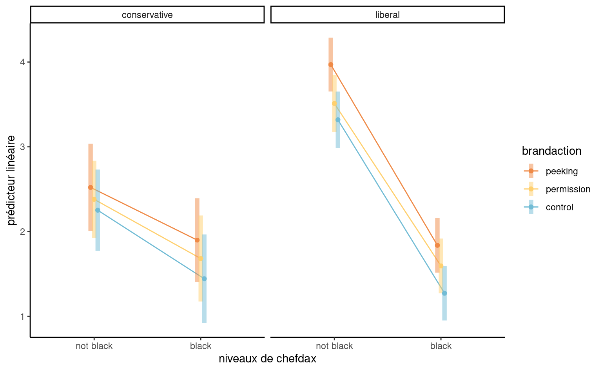
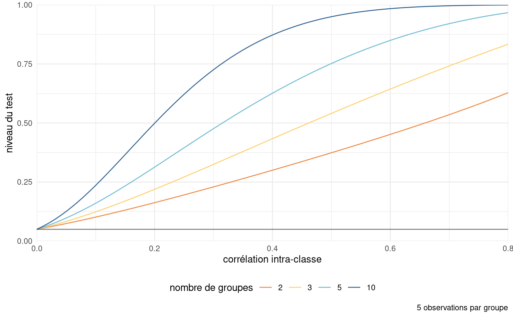

data(LC19_S1, package = "hecedsm")
modmat <- model.matrix( # Matrice du modèle
~ familiarity + consistency,
data = LC19_S1)
tail(modmat, n = 5L) # Imprimer les premières 5 lignes
#> (Intercept) familiarity consistencyinconsistent
#> 92 1 6 1
#> 93 1 4 1
#> 94 1 7 1
#> 95 1 7 1
#> 96 1 7 1
dim(modmat) # dimension de la matrice du modèle
#> [1] 96 34 Régression linéaire
4.1 Introduction
Le modèle de régression linéaire, ou modèle linéaire, est l’un des outils les plus polyvalents pour l’inférence statistique. La régression linéaire est principalement utilisée pour évaluer les effets des variables explicatives (souvent l’effet d’une manipulation ou d’un traitement dans un cadre expérimental) sur la moyenne d’une variable réponse continue, ou pour la prédiction. Un modèle linéaire est un modèle qui décrit la moyenne d’une variable réponse continue \(Y_i\) d’un échantillon aléatoire de taille \(n\) comme fonction linéaire des variables explicatives (également appelés prédicteurs, régresseurs ou covariables) \(X_1, \ldots, X_p\).
Dénotons par \(Y_i\) la valeur de \(Y\) pour le sujet \(i\), et \(X_{ij}\) la valeur de la \(j\)e variable explicative du sujet \(i\). \[\begin{align} \underset{\text{moyenne conditionnelle}}{\mathsf{E}(Y_i \mid \boldsymbol{X}_i=\boldsymbol{x}_i)}=\mu_i=\underset{\substack{\text{combinaison linéaire (somme pondérée)}\\ \text{de variables explicatives}}}{\beta_0 + \beta_1x_{i1} + \cdots + \beta_p x_{ip}}\equiv \mathbf{x}_i\boldsymbol{\beta}. \end{align}\] où \(\mathbf{x}_i = (1, x_{i1}, \ldots, x_{ip})\) est un vecteur ligne de taille \((p+1)\) contenant les variables explicatives de l’observation \(i\) et \(\boldsymbol{\beta} = (\beta_0, \ldots, \beta_p)^\top\) est un vecteur colonne de longueur \(p+1\) contenant les coefficients de la moyenne. Le fait que la moyenne est conditionnelle aux valeurs de \(\mathbf{X}\) implique simplement que l’on considère les régresseurs comme constant, ou connus à l’avance. Les coefficients \(\boldsymbol{\beta}\) sont les mêmes pour toutes les observations, mais le vecteurs de variables explicatives \(\mathbf{x}_i\) peut différer d’une observation à l’autre. Le modèle est linéaire en \(\beta_0, \ldots, \beta_p\), pas nécessairement dans les variables explicatives.
Pour simplifier la notation, nous regroupons les observations dans un vecteur \(n\) \(\boldsymbol{Y}\) et les explications dans une matrice \(n \times (p+1)\) \(\mathbf{X}\) en concaténant une colonne de uns et les vecteurs de colonnes \(p\) \(\boldsymbol{X}_1, \ldots, \boldsymbol{X}_p\), chacun contenant les \(n\) observations des explications respectives. La matrice \(\mathbf{X}\) est appelée matrice du modèle (ou parfois matrice de devis dans un contexte expérimental), et sa \(i\)ème ligne est \(\mathbf{x}_i\).
En supposant que la variable réponse provient d’une famille de localisation, nous pouvons réécrire le modèle linéaire en termes de la moyenne plus un aléa, \[\begin{align*} \underset{\text{observation}\vphantom{\mu_i}}{Y_i} = \underset{\text{moyenne } \mu_i}{\vphantom{Y_i}\mathbf{x}_i\boldsymbol{\beta}} + \underset{\text{aléa}\vphantom{\mu_i}}{\vphantom{Y_i}\varepsilon_i}, \end{align*}\] où \(\varepsilon_i\) est le terme spécifique à l’observation \(i\). On assume que les aléas \(\varepsilon_1, \ldots \varepsilon_n\) sont indépendants et identiquement distribués, avec \(\mathsf{E}(\varepsilon_i \mid \mathbf{x}_i) = 0\) et \(\mathsf{Var}(\varepsilon_i \mid \mathbf{x}_i) = \sigma^2\). On fixe l’espérance de l’aléa à zéro car on postule qu’il n’y a pas d’erreur systématique. La variance \(\sigma^2\) sert à tenir compte du fait qu’aucune relation linéaire exacte ne lie \(\mathbf{x}_i\) et \(Y_i\), ou que les mesures de \(Y_i\) sont variables.
Le modèle linéaire normal ou gaussien spécifie que les réponses suivent une loi normale, avec \(Y_i \mid \boldsymbol{X}_i=\boldsymbol{x}_i \sim \mathsf{normale}(\mathbf{x}_i\boldsymbol{\beta}, \sigma^2)\). La loi normale est une famille de localisation, de sorte que \(Y \sim \mathsf{normale}(\mu, \sigma^2)\) équivaut à la décomposition additive \(\mu + \varepsilon\) pour \(\varepsilon \sim \mathsf{normale}(0, \sigma^2)\).
4.1.1 Exemples
Considérons quelques exemples de jeux de données qui serviront à illustrer les méthodes par la suite.
Exemple 4.1 (Cohérence de descriptions de produits) L’étude 1 de Lee et Choi (2019) (base de données LC19_S1, paquet hecedsm) considère l’impact sur la perception d’un produit de la divergence entre la description textuelle et l’image. Dans leur première expérience, un paquet de six brosses à dents est vendu, mais l’image montre soit un paquet de six, soit une seule). Les auteurs ont également mesuré la familiarité préalable avec la marque de l’article. Les \(n=96\) participants ont été recrutés à l’aide d’un panel en ligne. Nous pourrions ajuster un modèle linéaire pour le score moyen d’évaluation du produit, prodeval, en fonction de la familiarité de la marque familiarity, un nombre entier allant de 1 à 7, et une variable binaire pour le facteur expérimental consistency, codé 0 pour des descriptions d’image/texte cohérentes et 1 si elles sont incohérentes. La matrice du modèle qui en résulte est alors de dimension \(96\times 3\). La réponse prodeval est fortement discrétisée.
Exemple 4.2 (Méthodes d’apprentissage de compréhension de lecture) La base de données BSJ92 du paquet hecedsm contient les résultats d’une expérience de Baumann, Seifert-Kessell, et Jones (1992) sur l’efficacité de différentes stratégies de lecture sur la compréhension d’enfants.
Soixante-six élèves de quatrième année ont été assignés au hasard à l’un des trois groupes expérimentaux suivants : (a) un groupe « Think-Aloud » (TA), dans lequel les élèves ont appris diverses stratégies de contrôle de la compréhension pour la lecture d’histoires (par exemple : auto-questionnement, prédiction, relecture) par le biais de la réflexion à haute voix; (b) un groupe lecture dirigée-activité de réflexion (DRTA), dans lequel les élèves ont appris une stratégie de prédiction-vérification pour lire et répondre aux histoires; ou (c) un groupe activité de lecture dirigée (DRA), un groupe contrôle dans lequel les élèves se sont engagés dans une lecture guidée non interactive d’histoires.
Les variables d’intérêt sont group, le facteur pour le groupe expérimental, soit DRTA, TA et DR ainsi que les variables numériques pretest1 et posttest1, qui donnent le score (sur 16) sur le test pré-expérience pour la tâche de détection des erreurs.
Les données sont balancées puisqu’il y a 22 observations dans chacun des trois sous-groupes. Les chercheurs ont appliqué une série de trois évaluations: le test 1 de détection d’erreurs, le test 2 consistant en un questionnaire de suivi de compréhension, et le test 3 standardisé Degrees of Reading Power). Les tests 1 et 2 ont été administrés à la fois avant et après l’intervention: cela nous permet d’établir l’amélioration moyenne de l’élève en ajoutant le résultat du test pré-intervention comme covariable. Les tests 1 étaient sur 16, mais celui administré après l’expérience a été rendu plus difficile pour éviter les cas d’étudiants obtenant des scores presque complets. La corrélation entre le pré-test et le post-test 1 est \((\widehat{\rho}_1=0.57)\), beaucoup plus forte que celle du second test \((\widehat{\rho}_2=0.21)\).
Exemple 4.3 (Discrimination salariale dans un collège américain) On s’intéresse à la discrimination salariale dans un collège américain, au sein duquel une étude a été réalisée pour investiguer s’il existait des inégalités salariales entre hommes et femmes. Le jeu de données college contient les variables suivantes:
salaire: salaire de professeurs pendant l’année académique 2008–2009 (en milliers de dollars USD).echelon: échelon académique, soit adjoint (adjoint), aggrégé (aggrege) ou titulaire (titulaire).domaine: variable catégorielle indiquant le champ d’expertise du professeur, soit appliqué (applique) ou théorique (theorique).sexe: indicateur binaire pour le sexe,hommeoufemme.service: nombre d’années de service.annees: nombre d’années depuis l’obtention du doctorat.
Exemple 4.4 (Suggestion de montants de dons) L’étude 1 de Moon et VanEpps (2023) (données MV23_S1, paquet hecedsm) porte sur la proportion de donateurs à un organisme de charité et le montant de leurs dons. Les participants au panel en ligne avaient la possibilité de gagner 25$ et de faire don d’une partie de cette somme à l’organisme de leur choix. Les données fournies incluent uniquement les personnes qui n’ont pas dépassé ce montant et qui ont indiqué avoir fait un don d’un montant non nul.
Exemple 4.5 (Un emballage en carton supplémentaire est-il considéré comme plus écologique ?) Sokolova, Krishna, et Döring (2023) tient compte des préjugés des consommateurs lorsqu’il s’agit d’évaluer le caractère écologique des emballages. Des produits tels que les céréales sont emballés dans des sacs en plastique, eux-mêmes recouverts d’une boîte. Ils supposent (et constatent) que, paradoxalement, les consommateurs ont tendance à considérer l’emballage comme plus écologique lorsque la quantité de carton ou de carton entourant la boîte est plus importante, ce qui n’est pas le cas. Nous examinons dans la suite les données de l’étude 2A, qui mesure la perception du respect de l’environnement (PEF, variable pef) en fonction de la proportion d’emballage en carton (soit aucun, soit la moitié de la surface du plastique, soit la même, soit le double).
4.1.2 Analyse exploratoire des données
L’analyse exploratoire des données est une procédure itérative par laquelle nous interrogeons les données, en utilisant des informations auxiliaires, des statistiques descriptives et des graphiques, afin de mieux informer notre modélisation.
Elle est utile pour mieux comprendre les caractéristiques des données (plan d’échantillonnage, valeurs manquantes, valeurs aberrantes), la nature des observations, qu’il s’agisse de variables réponse ou explicatives et les interrelations entre variables.
Voir le Chapitre 11 de Alexander (2023) pour des exemples. En particulier, il convient de vérifier
- que les variables catégorielles sont adéquatement traitées comme des facteurs (
factor). - que les valeurs manquantes sont adéquatement déclarées comme telles (code d’erreur, 999, etc.)
- s’il ne vaudrait mieux pas retirer certaines variables explicatives avec beaucoup de valeurs manquantes.
- s’il ne vaudrait mieux pas fusionner des modalités de variables catégorielles si le nombre d’observation par modalité est trop faible.
- qu’il n’y a pas de variable explicative dérivée de la variable réponse
- que le sous-ensemble des observations employé pour l’analyse statistique est adéquat.
- qu’il n’y a pas d’anomalies ou de valeurs aberrantes (par ex., 999 pour valeurs manquantes) qui viendraient fausser les résultats.
Exemple 4.6 (Analyse exploratoire des données college) Une analyse exploratoire des données est de mise avant d’ébaucher un modèle. Si le salaire augmente au fil des ans, on voit que l’hétérogénéité change en fonction de l’échelon et qu’il y a une relation claire entre ce dernier et le nombre d’années de service (les professeurs n’étant éligibles à des promotions qu’après un certain nombre d’années). Les professeurs adjoints qui ne sont pas promus sont généralement mis à la porte, aussi il y a moins d’occasions pour que les salaires varient sur cette échelle.
college: répartition des salaires en fonction de l’échelon et du nombre d’années de service
Ainsi, le salaire augmente avec les années, mais la variabilité croît également. Les professeurs adjoints qui ne sont pas promus sont généralement mis à la porte, aussi il y a moins d’occasions pour que les salaires varient sur cette échelle. Il y a peu de femmes dans l’échantillon: moins d’information signifie moins de puissance pour détecter de petites différences de salaire. Si on fait un tableau de contingence de l’échelon et du sexe, on peut calculer la proportion relative homme/femme dans chaque échelon: 16% des profs adjoints, 16% pour les aggrégés, mais seulement 7% des titulaires alors que ces derniers sont mieux payés en moyenne.
| adjoint | aggrege | titulaire | |
|---|---|---|---|
| femme | 11 | 10 | 18 |
| homme | 56 | 54 | 248 |
Plusieurs des variables explicatives potentielles des données college sont cat/gorielles (echelon, sexe, discipline), les deux dernières étant binaires. Les variables numériques annees et service sont fortement corrélées, avec une corrélation linéaire de 0.91.
Exemple 4.7 (Analyse exploratoire et données manquantes) Il convient de vérifier pour les données de Moon et VanEpps (2023) que la description de la collecte coïncide avec la structure. Puisque les personnes qui n’ont pas donné ne remplissent pas le champ pour le montant, ce dernier indique une valeur manquante. Tous les montants des dons sont entre 0.25$ et 25$.
data(MV23_S1, package = "hecedsm")
str(MV23_S1)
#> tibble [869 × 4] (S3: tbl_df/tbl/data.frame)
#> $ before : int [1:869] 0 1 0 1 1 1 1 0 1 0 ...
#> $ donate : int [1:869] 0 0 0 1 1 0 1 0 0 1 ...
#> $ condition: Factor w/ 2 levels "open-ended","quantity": 1 1 1 1 2 2 2 1 1 1 ...
#> $ amount : num [1:869] NA NA NA 10 5 NA 20 NA NA 25 ...
summary(MV23_S1)
#> before donate condition amount
#> Min. :0.000 Min. :0.00 open-ended:407 Min. : 0.2
#> 1st Qu.:0.000 1st Qu.:0.00 quantity :462 1st Qu.: 5.0
#> Median :1.000 Median :1.00 Median :10.0
#> Mean :0.596 Mean :0.73 Mean :10.7
#> 3rd Qu.:1.000 3rd Qu.:1.00 3rd Qu.:15.0
#> Max. :1.000 Max. :1.00 Max. :25.0
#> NA's :1 NA's :235Si nous incluons amount comme variable réponse dans un modèle de régression, les 235 observations manquantes seront supprimées par défaut. Cela ne pose pas de problème si nous voulons comparer le montant moyen des personnes qui ont fait un don, mais dans le cas contraire, nous devons transformer les NA en zéros. La variable donate ne doit pas être incluse comme variable explicative dans le modèle, car elle permet de prédire exactement les personnes qui n’ont pas donné.
4.1.3 Spécification du modèle pour la moyenne
La première étape d’une analyse consiste à décider quelles variables explicatives doivent être ajoutées à l’équation de la moyenne, et sous quelle forme. Les modèles ne sont que des approximations de la réalité; la section 2.1 de Venables (2000) affirme que, si nous pensons que la véritable fonction moyenne reliant les variables explicatives \(\boldsymbol{X}\) et la réponse \(Y\) est de la forme \(\mathsf{E}(Y \mid \boldsymbol{X}) = f(\boldsymbol{X})\) pour \(f\) suffisamment lisse, alors le modèle linéaire est une approximation du premier ordre. À des fins d’interprétation, il est logique de centrer sur la moyenne toute variable explicative continue, car cela facilite l’interprétation.
Dans un cadre expérimental, où la condition expérimentale est attribué de manière aléatoire, nous pouvons directement comparer les différents traitements et tirer des conclusions causales (puisque toutes les autres choses sont égales en moyenne constantes, toute différence détectable est due en moyenne à notre manipulation). Bien que nous nous abstenions généralement d’inclure d’autres variables explicatives afin de préserver la simplicité du modèle, il peut néanmoins être utile de prendre en compte certaines variables concomitantes qui expliquent une partie de la variabilité afin de filtrer le bruit de fond et d’augmenter la puissance de l’étude. Par exemple, pour les données de Baumann, Seifert-Kessell, et Jones (1992), l’objectif est de comparer les scores moyens en fonction de la méthode d’enseignement, nous inclurions group. Dans cet exemple, il serait également logique d’inclure le résultat pretest1 en tant qu’élément explicatif pour posttest1. De cette façon, nous modéliserons la différence moyenne d’amélioration entre le pré-test et le post-test plutôt que le résultat final.
Dans un contexte observationnel, les participants dans différents groupes ont des caractéristiques différentes et nous devons donc tenir compte de ces différences. Les modèles linéaires utilisés en économie et en finance contiennent souvent des variables de contrôle au modèle pour tenir compte des différences potentielles dues aux variables sociodémographiques (âge, revenu, etc.) qui seraient corrélées à l’appartenance aux groupes. Tout test de coefficients ne prendrait en compte que la corrélation entre le résultat \(Y\) et le facteur explicatif postulé d’intérêt.
4.2 Interprétation des coefficients
La spécification de la moyenne est \[\begin{align*} \mathsf{E}(Y_i \mid \boldsymbol{X}_i = \boldsymbol{x}_i) = \beta_0 + \beta_1 x_{i1} + \cdots + \beta_p x_{ip}. \end{align*}\] L’ordonnée à l’origine \(\beta_0\) est la valeur moyenne de \(Y\) lorsque toutes les variables explicatives du modèles sont nulles, soit \(\boldsymbol{x}_i=\boldsymbol{0}_p\). \[\begin{align*} \beta_0 &= \mathsf{E}(Y \mid X_1=0,X_2=0,\ldots,X_p=0) \\ &= \beta_0 + \beta_1 \times 0 + \beta_2 \times 0 + \cdots + \beta_p \times 0 \end{align*}\] Bien sur, il se peut que cette interprétation n’ait aucun sens dans le contexte étudié. Centrer les variables explicatives numériques (pour que leurs moyennes soit zéro) permet de rendre l’ordonnée à l’origine plus interprétable.
En régression linéaire, le paramètre \(\beta_j\) mesure l’effet de la variable \(X_j\) sur la variable \(Y\) une fois que l’on tient compte des effets des autres variables explicatives. Pour chaque augmentation d’une unité de \(X_j\), la réponse \(Y\) augmente en moyenne de \(\beta_j\) lorsque les autres variables demeurent inchangées, \[\begin{align*} \beta_j &= \mathsf{E}(Y \mid X_j= x_j+1, \boldsymbol{X}_{-j} = \boldsymbol{x}_{-j}) - \mathsf{E}(Y \mid \boldsymbol{X} = \boldsymbol{x}) \\ &= \sum_{\substack{k=1\\k \neq j}}^p \beta_kx_k + \beta_j(x_j+1) - \sum_{k=1}^p \beta_k x_k \end{align*}\]
Définition 4.1 (Effet marginal) On définit l’effet marginal comme la dérivée première de la moyenne conditionnelle par rapport à \(X_j\), soit \[\text{effet marginal de }X_j = \frac{\partial \mathsf{E}(Y \mid \boldsymbol{X})}{ \partial X_j}.\] Le coefficient \(\beta_j\) est aussi l’effet marginal de la variable \(X_j\).
Les variables indicatrices, qui prennent typiquement des valeurs de \(-1\), \(0\) et \(1\), servent à indiquer l’appartenance aux différentes modalités d’une variable catégorielle. Par exemple, pour une variable indicatrice binaire, nous pouvons créer une colonne dont les entrées sont \(1\) pour le groupe de traitement et \(0\) pour le groupe de contrôle.
Exemple 4.8 (Modèle linéaire avec une seule variable binaire) Considérons par exemple un modèle linéaire pour les données de Moon et VanEpps (2023) qui inclut le montant (amount) (en dollars, de 0 pour les personnes qui n’ont pas fait de don, jusqu’à 25 dollars).
L’équation du modèle linéaire simple qui inclut la variable binaire condition est \[\begin{align*}
\mathsf{E}(\texttt{amount} \mid \texttt{condition})&= \beta_0 + \beta_1 \mathbf{1}_{\texttt{condition}=\texttt{quantity}}.
\\&= \begin{cases}
\beta_0, & \texttt{condition}=0, \\
\beta_0 + \beta_1 & \texttt{condition}=1.
\end{cases}
\end{align*}\] Soit \(\mu_0\) l’espérance du montant pour le groupe contrôle (open-ended) et \(\mu_1\) celui des participants du groupe de traitement (quantity). Un modèle linéaire qui ne contient qu’une variable binaire \(X\) comme régresseur revient à spécifier une moyenne différente pour chacun des deux groupes. L’ordonnée à l’origine \(\beta_0\) est la moyenne du groupe contrôle. La moyenne du groupe traitement (quantity) est \(\beta_0 + \beta_1 = \mu_1\) et donc \(\beta_1=\mu_1-\mu_0\) est la différence du montant moyen de dons entre le groupe open-ended et le groupe quantity. Cette paramétrisation est commode si on veut tester s’il y a une différence moyenne entre les deux groupes, puisque cette hypothèse nulle correspond à \(\mathscr{H}_0: \beta_1=0\).
MV23_S1 avec condition comme variable explicative binaire, avec nuage de points décalés et un diagramme en demi-violin. Les cercles indiquent les moyennes de l’échantillon.
Même si le modèle linéaire définit une droite, cette dernière ne peut être évaluée qu’à \(0\) ou \(1\); la Figure 4.2 montre cette droite avec en plus un nuage de points des montants, décalés horizontalement, et de la densité pour chaque condition. Le point coloré indique la moyenne empirique, qui correspond aux estimations.
Même s’il est clair que les données sont fortement discrétisées avec beaucoup de doublons et de zéros, l’échantillon a une taille de 869 observations, donc les conclusions quant aux moyennes de groupe seront fiables.
Considérons des variables catégorielles avec \(K > 2\) niveaux, qui dans R sont de la classe factor. La paramétrisation par défaut des facteurs se fait en termes de contraste de traitement: le niveau de référence du facteur (par défaut, la première valeur dans l’ordre alphanumérique) sera traité comme la catégorie de référence et assimilé à l’ordonnée à l’origine. Le logiciel créera alors un ensemble de \(K-1\) variables indicatrices pour un facteur à \(K\) niveaux, chacune d’entre elles ayant un pour la catégorie représentée et zéro dans le cas contraire.
Exemple 4.9 (Codage binaire pour les variables catégorielles) Considérons l’étude de Baumann, Seifert-Kessell, et Jones (1992) et la seule variable group. Les données sont classées par groupe : les 22 premières observations concernent le groupe DR, les 22 suivantes le groupe DRTA et les 22 dernières le groupe TA. Si nous ajustons un modèle avec groupe comme variable catégorielle
data(BSJ92, package = "hecedsm")
class(BSJ92$group) # Vérifier que group est un facteur
#> [1] "factor"
levels(BSJ92$group) # première valeur est la catégorie de référence
#> [1] "DR" "DRTA" "TA"
# Imprimer trois lignes de la matrice du modèle
# (trois enfants de groupes différents)
model.matrix(~ group, data = BSJ92)[c(1,23,47),]
#> (Intercept) groupDRTA groupTA
#> 1 1 0 0
#> 23 1 1 0
#> 47 1 0 1
# Comparer avec les niveaux des facteurs
BSJ92$group[c(1,23,47)]
#> [1] DR DRTA TA
#> Levels: DR DRTA TASi nous ajustons un modèle avec groupe comme variable catégorielle, la spécification de la moyenne du modèle est \[\mathsf{E}(Y \mid \texttt{group})= \beta_0 + \beta_1\mathbf{1}_{\texttt{group}=\texttt{DRTA}} + \beta_2\mathbf{1}_{\texttt{group}=\texttt{TA}}.\] Puisque la variable group est catégorielle avec \(K=3\) niveaux, il nous faut mettre \(K-1 = 2\) variables indicatrices.
Avec la paramétrisation en termes de traitements (option par défaut), on obtient
- \(\mathbf{1}_{\texttt{group}=\texttt{DRTA}}=1\) si
group=DRTAet zéro sinon, - \(\mathbf{1}_{\texttt{group}=\texttt{TA}}=1\) si
group=TAet zéro sinon.
Étant donné que le modèle comprend une ordonnée à l’origine et que le modèle décrit en fin de compte trois moyennes de groupe, nous n’avons besoin que de deux variables supplémentaires. Avec la paramétrisation en termes de traitements, la moyenne du groupe de référence est l’ordonnée à l’origine. Si group=DR (référence), les deux variables indicatrices binaires groupDRTA et groupTA sont nulles. La moyenne de chaque groupe est
- \(\mu_{\texttt{DR}} = \beta_0\),
- \(\mu_{\texttt{DRTA}}=\beta_0 + \beta_1\) et
- \(\mu_{\texttt{TA}} = \beta_0 + \beta_2\).
Ainsi, \(\beta_1\) est la différence de moyenne entre les groupes DRTA etDR, et de la même façon \(\beta_2=\mu_{\texttt{TA}}- \mu_{\texttt{DR}}\).
Remarque 4.1 (Contrainte de somme nulle). La paramétrisation discutée ci-dessus, qui est la valeur par défaut de la fonction lm, n’est pas la seule disponible. Plutôt que de comparer la moyenne de chaque groupe avec celle d’une catégorie de référence, la paramétrisation par défaut pour les modèles d’analyse de la variance est en termes de contraintes de somme nulle pour les coefficients, où l’ordonnée à l’origine est la moyenne équi-pondérée de chaque groupe, et les paramètres \(\beta_1, \ldots, \beta_{K-1}\) sont des différences par rapport à cette moyenne.
model.matrix(
~ group,
data = BSJ92,
contrasts.arg = list(group = "contr.sum"))| (Intercept) | group1 | group2 | |
|---|---|---|---|
| DR | 1 | 1 | 0 |
| DRTA | 1 | 0 | 1 |
| TA | 1 | -1 | -1 |
Dans la contrainte de somme nulle, nous obtenons à nouveau deux variables indicatrices, group1 et group2, ainsi que l’ordonnée à l’origine. La valeur de group1 est \(1\) si group=DR, \(0\) si group=DRTA et \(-1\) si group=TA. ous trouvons \(\mu_{\texttt{DR}} = \beta_0 + \beta_1\), \(\mu_{\texttt{DRTA}}=\beta_0 + \beta_2\) et \(\mu_{\texttt{TA}} = \beta_0 - \beta_1 - \beta_2\). Quelques manipulations algébriques révèlent que \(\beta_0 = (\mu_{\texttt{DR}} +\mu_{\texttt{DRTA}}+\mu_{\texttt{TA}})/3\), l’espérance équipondérée des différents niveaux. De manière générale, l’ordonnée à l’origine moins la somme de tous les autres coefficients liés aux facteurs.
En supprimant l’ordonnée à l’origine, on pourrait inclure trois variables indicatrices pour chaque niveau d’un facteur et chaque paramètre correspondrait alors à la moyenne. Ce n’est pas recommandé dans R car le logiciel traite différemment les modèles sans ordonnée à l’origine et certains résultats seront absurdes (par exemple, le coefficient de détermination sera erroné).
Exemple 4.10 (Interprétation des coefficients) On considère un modèle de régression pour les données college qui inclut le sexe, l’échelon académique, le nombre d’années de service et le domaine d’expertise (appliquée ou théorique).
Le modèle linéaire postulé s’écrit
\[\begin{align*} \texttt{salaire} &= \beta_0 + \beta_1 \mathbf{1}_{\texttt{sexe}=\texttt{femme}} +\beta_2 \mathbf{1}_{\texttt{domaine}=\texttt{theorique}} \\&\quad +\beta_3 \mathbf{1}_{\texttt{echelon}=\texttt{aggrege}} +\beta_4 \mathbf{1}_{\texttt{echelon}=\texttt{titulaire}} \\&\quad+\beta_5 \texttt{service} + \varepsilon. \end{align*}\]
| \(\widehat{\beta}_0\) | \(\widehat{\beta}_1\) | \(\widehat{\beta}_2\) | \(\widehat{\beta}_3\) | \(\widehat{\beta}_4\) | \(\widehat{\beta}_5\) |
|---|---|---|---|---|---|
| 86596 | -4771 | -13473 | 14560 | 49160 | -89 |
L’interprétation des coefficients est la suivante:
- L’ordonnée à l’origine \(\beta_0\) correspond au salaire moyen d’un professeur adjoint (un homme) qui vient de compléter ses études et qui travaille dans un domaine appliqué: on estime ce salaire à \(\widehat{\beta}_0=86596\) dollars.
- toutes choses étant égales par ailleurs (même domaine, échelon et années depuis le dernier diplôme), l’écart de salaire entre un homme et un femme est estimé à \(\widehat{\beta}_1=-4771\) dollars.
- ceteris paribus, un(e) professeur(e) qui oeuvre dans un domaine théorique gagne \(\beta_2\) dollars de plus qu’une personne du même sexe dans un domaine appliqué; on estime cette différence à \(-13473\) dollars.
- ceteris paribus, la différence moyenne de salaire entre professeurs adjoints et aggrégés est estimée à \(\widehat{\beta}_3=14560\) dollars.
- ceteris paribus, la différence moyenne de salaire entre professeurs adjoints et titulaires est de \(\widehat{\beta}_4=49160\) dollars.
- au sein d’un même échelon, chaque année supplémentaire de service mène à une augmentation de salaire annuelle moyenne de \(\widehat{\beta}_5=-89\) dollars.
Remarque 4.2 (Polynômes). Il n’est pas toujours possible de fixer la valeur des autres colonnes de \(\mathbf{X}\) si plusieurs colonnes contiennent des transformations ou des fonctions d’une même variable explicative. Par exemple, on pourrait par exemple considérer un polynôme d’ordre \(k\) (ordinairement, on va prendre \(k\leq 3\)), \[\begin{align*} \mathsf{E}(Y \mid X=x)=\beta_0+ \beta_1 x+ \beta_2 x^2 + \cdots +\beta_k x^k. \end{align*}\] Si l’on inclut un terme d’ordre \(k\), \(x^k\), il faut toujours inclure les termes d’ordre inférieur \(1, x, \ldots, x^{k-1}\) pour l’interprétabilité du modèle résultant (autrement, cela revient à choisir un polynôme en imposant que certains coefficients soient zéros). L’interprétation des effets des covariables nonlinéaires (même polynomiaux) est complexe parce qu’on ne peut pas « fixer la valeur des autres variables »: l’effet d’une augmentation d’une unité de \(x\) dépend de la valeur de cette dernière. L’effet marginal de \(x\) est \(\beta_1 + \sum_{j=1}^{k-1}j \beta_{j+1}x^j\).
L’utilisation de polynôme, plus flexibles, n’est généralement pas recommendée car ces derniers se généralisent mal hors de l’étendue observée des données. L’utilisation de splines avec une pénalité sur les coefficients, avec des modèles additifs, offre plus de flexibilité.
Exemple 4.11 (Modèle quadratique pour les données automobile) Considérons un modèle de régression linéaire pour l’autonomie d’essence en fonction de la puissance du moteur pour différentes voitures dont les caractéristiques sont données dans le jeu de données automobiles. Le modèle postulé incluant un terme quadratique est \[\begin{align*}
\texttt{autonomie}_i = \beta_0 + \beta_1 \texttt{puissance}_i + \beta_2 \texttt{puissance}_i^2 + \varepsilon_i
\end{align*}\] Afin de comparer l’ajustement du modèle quadratique, on peut inclure également la droite ajustée du modèle de régression simple qui n’inclut que puissance.
À vue d’oeil, l’ajustement quadratique est bon: nous verrons plus tard à l’aide de test si une simple droite aurait été suffisante. On voit aussi dans la Figure 4.3 que l’autonomie d’essence décroît rapidement quand la puissance croît entre \(0\) et \(189.35\), mais semble remonter légèrement par la suite pour les voitures qui un moteur de plus de 200 chevaux-vapeurs, ce que le modèle quadratique capture. Prenez garde en revanche à l’extrapolation là où vous n’avez pas de données (comme l’illustre remarquablement bien le modèle cubique de Hassett pour le nombre de cas quotidiens de coronavirus).
La représentation graphique du modèle polynomial de degré 2 présenté dans la Figure 4.3 peut sembler contre-intuitive, mais c’est une projection en 2D d’un plan 3D de coordonnées \(\beta_0 + \beta_1x-y +\beta_2z =0\), où \(x=\texttt{puissance}\), \(z=\texttt{puissance}^2\) et \(y=\texttt{autonomie}\). La physique et le bon-sens imposent la contrainte \(z = x^2\), et donc les valeurs ajustées vivent sur une courbe dans un sous-espace du plan ajusté, représenté en gris dans la Figure 4.4.
4.3 Estimation des paramètres
Considérons un échantillon de \(n\) observations. On n’observe ni les aléas \(\boldsymbol{\varepsilon}\), ni les paramètres \(\boldsymbol{\beta}\): il est donc impossible de recouvrer les (vrais) coefficients du modèle. Effectivement, le système d’équation spécifié par le modèle linéaire inclut \(n+p+1\) inconnues, mais uniquement \(n\) observations. Si on se concentre sur les \(p+1\) paramètres de moyenne et sur la variance \(\sigma^2\), nous pourrons estimer les paramètres généralement si \(n> p+2\), mais cela dépend de la spécification. Une infinité de plans pourraient passer dans le nuage de points; il faut donc choisir la meilleure droite (selon un critère donné). La section aborde le choix de ce critère et l’estimation des paramètres de la moyenne.
4.3.1 Moindres carrés ordinaires
Soit une matrice de modèle \(\mathbf{X}\) et une formulation pour la moyenne avec \(\mathsf{E}(Y_i) = \mathbf{x}_i\boldsymbol{\beta}\). Les estimateurs des moindres carrés ordinaires \(\widehat{\boldsymbol{\beta}}=(\widehat{\beta}_0, \ldots, \widehat{\beta}_p)\) sont les paramètres qui minimisent simultanément la distance euclidienne entre les observations \(y_i\) et les valeurs ajustées \(\widehat{y}_i=\mathbf{x}_i\widehat{\boldsymbol{\beta}}\).
En d’autres mots, les estimateurs des moindres carrés sont la solution du problème d’optimization convexe \[\begin{align*} \widehat{\boldsymbol{\beta}} &=\min_{\boldsymbol{\beta} \in \mathbb{R}^{p+1}}\sum_{i=1}^n (Y_i-\widehat{Y}_i)^2= \min_{\boldsymbol{\beta}} \|\boldsymbol{Y}-\mathbf{X}\boldsymbol{\beta}\|^2 \end{align*}\] Ce système d’équation a une solution explicite qui est plus facilement exprimée en notation matricielle. Soit les matrices et vecteurs \[\begin{align*} \boldsymbol{Y} = \begin{pmatrix} Y_1 \\ Y_2 \\ \vdots \\ Y_n \end{pmatrix} , \; \mathbf{X} = \begin{pmatrix} 1 & x_{11} & x_{12} & \cdots & x_{1p} \\ 1 & x_{21} & x_{22} & \cdots & x_{2p} \\ \vdots & \vdots & \ddots & \vdots \\ 1 & x_{n1} & x_{n2} & \cdots & x_{np} \end{pmatrix} , \; \boldsymbol{\beta} = \begin{pmatrix} \beta_1 \\ \beta_2 \\ \vdots \\ \beta_p \end{pmatrix} \end{align*}\]
Proposition 4.1 (Moindres carrés ordinaires) L’estimateur des moindres carrés ordinaires résoud le problème d’optimisation non-contraint \[\begin{align*} \widehat{\boldsymbol{\beta}}=\min_{\boldsymbol{\beta} \in \mathbb{R}^{p+1}}(\boldsymbol{y}-\mathbf{X}\boldsymbol{\beta})^\top(\boldsymbol{y}-\mathbf{X}\boldsymbol{\beta}). \end{align*}\] On peut calculer la dérivée première par rapport à \(\boldsymbol{\beta}\), égaler à zéro et isoler le maximum pour obtenir une formule explicite pour \(\widehat{\boldsymbol{\beta}}\), \[\begin{align*} \mathbf{0}_n&=\frac{\partial}{\partial\boldsymbol{\beta}}(\boldsymbol{y}-\mathbf{X}\boldsymbol{\beta})^\top(\boldsymbol{y}-\mathbf{X}\boldsymbol{\beta})\\ \\&=\frac{\partial (\boldsymbol{y}-\mathbf{X}\boldsymbol{\beta})}{\partial \boldsymbol{\beta}}\frac{\partial (\boldsymbol{y}-\mathbf{X}\boldsymbol{\beta})^\top(\boldsymbol{y}-\mathbf{X}\boldsymbol{\beta})}{\partial (\boldsymbol{y}-\mathbf{X}\boldsymbol{\beta})}\\ \\&=\mathbf{X}^\top (\boldsymbol{y}-\mathbf{X}\boldsymbol{\beta}) \end{align*}\] en utilisant la règle de dérivation en chaîne; on peut ainsi distribuer les termes pour obtenir l’équation normale \[\begin{align*} \mathbf{X}^\top \mathbf{X}\boldsymbol{\beta}&=\mathbf{X}^\top \boldsymbol{y}. \end{align*}\] Si \(\mathbf{X}\) est une matrice de rang \(p\), alors la forme quadratique \(\mathbf{X}^\top \mathbf{X}\) est inversible et l’unique solution du problème d’optimisation est \[\begin{align*} \widehat{\boldsymbol{\beta}} = (\mathbf{X}^{\top} \mathbf{X})^{-1} \mathbf{X}^{\top} \boldsymbol{Y}. \end{align*}\] Si le rang de la matrice \(\mathbf{X}\) est dimension \(n \times (p+1)\) est de rang \(p+1\), l’unique solution du problème d’optimisation est \[ \widehat{\boldsymbol{\beta}} = (\mathbf{X}^{\top} \mathbf{X})^{-1} \mathbf{X}^{\top} \boldsymbol{Y}. \tag{4.1}\] Cet estimateur dit des moindres carrés ordinaires (MCO) est explicite; il n’est donc pas nécessaire de procéder à l’optimisation à l’aide d’algorithmes numériques.
4.3.2 Maximum de vraisemblance
Nous pourrions également envisager l’estimation du maximum de vraisemblance. Proposition 4.2 montre que, en supposant la normalité des aléas, les estimateurs des moindres carrés de \(\boldsymbol{\beta}\) coïncident avec ceux du maximum de vraisemblance.
Proposition 4.2 (Estimation du maximum de vraisemblance du modèle linéaire normal) Le modèle de régression linéaire spécifie que les observations \(Y_i \sim \mathsf{normale}(\mathbf{x}_i\boldsymbol{\beta}, \sigma^2)\) sont indépendantes. Le modèle linéaire a \(p+2\) paramètres (\(\boldsymbol{\beta}\) et \(\sigma^2\)) et la log-vraisemblance est, abstraction faite des termes constants, \[\begin{align*} \ell(\boldsymbol{\beta}, \sigma)&\propto-\frac{n}{2} \ln (\sigma^2) -\frac{1}{2\sigma^2}\left\{(\boldsymbol{y}-\mathbf{X}\boldsymbol{\beta})^\top(\boldsymbol{y}-\mathbf{X}\boldsymbol{\beta})\right\}^2. \end{align*}\] Maximiser la log-vraisemblance par rapport à \(\boldsymbol{\beta}\) revient à minimiser la somme du carré des erreurs \(\sum_{i=1}^n (y_i - \mathbf{x}_i\boldsymbol{\beta})^2\), quelle que soit la valeur de \(\sigma\), et on recouvre \(\widehat{\boldsymbol{\beta}}\). L’estimateur du maximum de vraisemblance de la variance \(\widehat{\sigma}^2\) est \[\begin{align*} \widehat{\sigma}^2=\mathrm{arg max}_{\sigma^2} \ell(\widehat{\boldsymbol{\beta}}, \sigma^2). \end{align*}\] La log-vraisemblance profilée de \(\sigma^2\), abstraction faite des constantes, est \[\begin{align*} \ell_{\mathrm{p}}(\sigma^2) &\propto-\frac{1}{2}\left\{n\ln\sigma^2+\frac{1}{\sigma^2}(\boldsymbol{y}-\mathbf{X}\hat{\boldsymbol{\beta}})^\top(\boldsymbol{y}-\mathbf{X}\hat{\boldsymbol{\beta}})\right\}. \end{align*}\] En différenciant chaque terme par rapport à \(\sigma^2\) et en fixant le gradient à zéro, on obtient \[\begin{align*} \frac{\partial \ell_{\mathrm{p}}(\sigma^2)}{\partial \sigma^2} = -\frac{n}{2\sigma^2} + \frac{(\boldsymbol{y}-\mathbf{X}\hat{\boldsymbol{\beta}})^\top(\boldsymbol{y}-\mathbf{X}\hat{\boldsymbol{\beta}})}{2\sigma^4} = 0 \end{align*}\]
On déduit que l’estimateur du maximum de vraisemblance est la moyenne des carrés des résidus, \[\begin{align*} \widehat{\sigma}^2&=\frac{1}{n}(\boldsymbol{Y}-\mathbf{X}\hat{\boldsymbol{\beta}})^\top(\boldsymbol{Y}-\mathbf{X}\hat{\boldsymbol{\beta}})\\&= \frac{1}{n} \sum_{i=1}^n (y_i - \mathbf{x}_i\widehat{\boldsymbol{\beta}})^2= \frac{\mathsf{SC}_e}{n}; \end{align*}\] L’estimateur sans biais habituel de \(\sigma^2\) calculé par le logiciel est \[S^2=\mathsf{SC}_e/(n-p-1), \] où le dénominateur est la taille de l’échantillon \(n\) moins le nombre de paramètres de la moyenne \(\boldsymbol{\beta}\), soit \(p+1\).
Proposition 4.3 (Matrices d’information pour modèles linéaires normaux.) Les entrées de la matrice d’information observée du modèle linéaire normal sont les suivantes \[\begin{align*} -\frac{\partial^2 \ell(\boldsymbol{\beta}, \sigma^2)}{\partial \boldsymbol{\beta}\partial \boldsymbol{\beta}^\top} &= \frac{1}{\sigma^2} \frac{\partial \mathbf{X}^\top(\boldsymbol{y}-\mathbf{X}\boldsymbol{\beta})}{\partial \boldsymbol{\beta}^\top} = \frac{\mathbf{X}^\top\mathbf{X}}{\sigma^2}\\ -\frac{\partial^2 \ell(\boldsymbol{\beta}, \sigma^2)}{\partial \boldsymbol{\beta}\partial \sigma^2} &=- \frac{\mathbf{X}^\top(\boldsymbol{y}-\mathbf{X}\boldsymbol{\beta})}{\sigma^4}\\ -\frac{\partial^2 \ell(\boldsymbol{\beta}, \sigma^2)}{\partial (\sigma^2)^2} &= -\frac{n}{2\sigma^4} + \frac{(\boldsymbol{y}-\mathbf{X}\boldsymbol{\beta})^\top(\boldsymbol{y}-\mathbf{X}\boldsymbol{\beta})}{\sigma^6}. \end{align*}\] Si on évalue l’information observée aux EMV, on obtient \[\begin{align*} j(\widehat{\boldsymbol{\beta}}, \widehat{\sigma^2}) = \begin{pmatrix} \frac{\mathbf{X}^\top\mathbf{X}}{\widehat{\sigma^2}} & \boldsymbol{0}_{p+1} \\ \boldsymbol{0}_{p+1}^\top & \frac{n}{2\widehat{\sigma^4}} \end{pmatrix} \end{align*}\] puisque \(\widehat{\sigma}^2=\mathsf{SC}_e/n\) et que les résidus sont orthogonaux à la matrice du modèle. Sachant que \(\mathsf{E}(Y \mid \mathbf{X})=\mathbf{X}\boldsymbol{\beta}\), la matrice d’information de Fisher est \[\begin{align*} i(\boldsymbol{\beta}, \sigma^2) = \begin{pmatrix} \frac{\mathbf{X}^\top\mathbf{X}}{\sigma^2} & \boldsymbol{0}_{p+1} \\ \boldsymbol{0}_{p+1}^\top & \frac{n}{2\sigma^4} \end{pmatrix} \end{align*}\] Puisque la loi asymptotique de l’estimateur est normale, les EMV de \(\sigma^2\) et \(\boldsymbol{\beta}\) sont asymptotiquement indépendants car leur corrélation asymptotique est nulle.Pourvu que la matrice carrée \((p+1)\), \(\mathbf{X}^\top\mathbf{X}\) soit inversible, la variance asymptotique des estimateurs est \(\mathsf{Var}(\widehat{\boldsymbol{\beta}})=\sigma^2(\mathbf{X}^\top\mathbf{X})^{-1}\) et \(\mathsf{Var}(\widehat{\sigma}^2) = 2\sigma^4/n\).
Remarque 4.3. Si on suppose que les observations sont normales, alors on peut montrer que \(\mathsf{SC}_e/\sigma^2 \sim \chi^2_{n-p-1}\) et \(\widehat{\boldsymbol{\beta}} \sim \mathsf{normale}\{\boldsymbol{\beta}, \sigma^2(\mathbf{X}^\top\mathbf{X})^{-1}\}\) sont indépendants et leurs lois sont connues. Cela nous permettra de construire des tests d’hypothèse.
4.3.3 Ajustement des modèles linéaires à l’aide d’un logiciel
Bien que nous puissions construire la matrice du modèle nous-mêmes et utiliser la formule des moindres carrés de l’Équation 4.1, les routines numériques implémentées dans les logiciels sont préférables car plus stables. La fonction lm dans R ajuste les modèles linéaires, tout comme glm avec les arguments par défaut. Les objets de la classe lm ont plusieurs méthodes qui vous permettent d’extraire des objets spécifiques des objets lm. Par exemple, les fonctions coef, resid, fitted, model.matrix renvoient les estimations des coefficients \(\widehat{\boldsymbol{\beta}},\) les résidus ordinaires \(\boldsymbol{e},\) les valeurs ajustées \(\widehat{\boldsymbol{y}}\) et la matrice du modèle \(\mathbf{X}\).
data(BSJ92, package = "hecedsm") # charger les données
str(BSJ92) # vérifier que les variables catégorielles sont "factor"
# Ajustement de la régression linéaire
linmod <- lm(posttest1 ~ pretest1 + group,
data = BSJ92)
est_beta <- coef(linmod) # coefficients (betas)
vcov_beta <- vcov(linmod) # matrice de covariance des betas
summary(linmod) # tableau résumé
beta_ic <- confint(linmod) # IC de Wald pour betas
y_adj <- fitted(linmod) # valeurs ajustées
e <- resid(linmod) # résidus ordinaires
# Vérifier la formule des moindres carrés ordinaires
X <- model.matrix(linmod) # matrice du modèle
y <- college$salary
isTRUE(all.equal(
c(solve(t(X) %*% X) %*% t(X) %*% y),
as.numeric(coef(linmod))
))La méthode summary est sans doute la plus utile: elle affiche les estimations des paramètres de la moyenne ainsi que leurs erreurs type, les valeurs \(t\) pour le test de Wald de l’hypothèse \(\mathscr{H}_0 : \beta_i=0\) et les valeurs-\(p\) associées. D’autres statistiques descriptives, portant sur la taille de l’échantillon, les degrés de liberté, etc. sont données au bas du tableau. Notez que la fonction lm utilise l’estimateur sans biais de la variance \(\sigma^2\).
4.4 Prédictions
Une fois les estimations des coefficients obtenues, on peut calculer les valeurs ajustées \(\widehat{\boldsymbol{y}}\) avec \(\mathbf{X}\widehat{\boldsymbol{\beta}}\), où \(\mathbf{X}\) dénote la matrice du modèle \(n \times (p+1)\). On peut aussi généraliser cette approche et obtenir une estimation de la moyenne pour n’importe quel vecteur lignes de covariables \(\mathbf{x}^* = (1, x^*_1, \ldots, x^*_p)\), sachant que \(\mathsf{E}(Y \mid \mathbf{x}^*)=\mathbf{x}^*\boldsymbol{\beta}\), en remplaçant les coefficients inconnus \(\boldsymbol{\beta}\) par leurs estimations \(\widehat{\boldsymbol{\beta}}\). Pour le modèle postulé, c’est le meilleur prédicteur linéaire non-biaisé de la moyenne.
Si l’on veut prédire la valeur d’une nouvelle observation, disons \(Y^*\), dont le vecteur de variables explicatives \(\mathbf{x}^*\) sont connues, la prédiction sera donc \(\widehat{y}^* = \mathbf{x}^*\widehat{\boldsymbol{\beta}}\) parce que \[\begin{align*} \mathsf{E}(\widehat{Y}^* \mid \mathbf{X}, \mathbf{x}^*) = \mathsf{E}(\mathbf{x}^*\widehat{\boldsymbol{\beta}}\mid \mathbf{X}, \mathbf{x}^*) = \mathbf{x}^*\boldsymbol{\beta}. \end{align*}\] Cependant, les observations individuelles varient davantage que les moyennes (qui sont elles-mêmes basées sur plusieurs observations). Intuitivement, cela est dû à l’incertitude supplémentaire du terme d’erreur apparaissant dans l’équation du modèle: la variabilité des prédictions est la somme de l’incertitude due aux estimateurs (basés sur des données aléatoires) et de la variance intrinsèque des observations en supposant que la nouvelle observation est indépendante de celles utilisées pour estimer les coefficients, \[\begin{align*} \mathsf{Va}(Y^*-\widehat{Y}^* \mid \mathbf{X}, \mathbf{x}^*) &= \mathsf{Va}(Y^* - \mathbf{x}^*\widehat{\boldsymbol{\beta}} \mid \mathbf{X}, \mathbf{x}^*) \\&=\mathsf{Va}(Y^* \mid \mathbf{X}, \mathbf{x}^*) + \mathsf{Va}(\mathbf{x}^*\widehat{\boldsymbol{\beta}} \mid \mathbf{X}, \mathbf{x}^*) \\& = \sigma^2 + \sigma^2\mathbf{x}^{*\vphantom{\top}}(\mathbf{X}^\top\mathbf{X})^{-1}\mathbf{x}^{*\top}. \end{align*}\] On peut baser les intervalles de prédictions sur la loi Student-\(t\), à l’aide du pivot \[\begin{align*} \frac{Y^*-\mathrm{x}^*\widehat{\boldsymbol{\beta}}}{\sqrt{S^2\{1+\mathrm{x}^*(\mathbf{X}^\top\mathbf{X})^{-1}\mathrm{x}^{*\top}\}}}\sim \mathsf{Student}(n-p-1). \end{align*}\] On obtient l’intervalle de prédiction de niveau \(1-\alpha\) pour \(Y^*\) en inversant la statistique de test \[\begin{align*} \mathrm{x}^*\widehat{\boldsymbol{\beta}}\pm \mathfrak{t}_{n-p-1}(\alpha/2)\sqrt{S^2\{1+\mathrm{x}^*(\mathbf{X}^\top\mathbf{X})^{-1}\mathrm{x}^{*\top}\}}. \end{align*}\] Des calculs similaires pour les intervalles de confiance ponctuels pour la moyenne \(\mathrm{x}^*\boldsymbol{\beta}\) donnent \[\begin{align*} \mathrm{x}^*\widehat{\boldsymbol{\beta}}\pm \mathfrak{t}_{n-p-1}(\alpha/2)\sqrt{S^2\mathrm{x}^*(\mathbf{X}^\top\mathbf{X})^{-1}\mathrm{x}^{*\top}}. \end{align*}\] Les deux formules diffèrent uniquement au niveau de la variabilité.
Exemple 4.12 (Prédiction pour une régression linéaire simple) Considérons les données de l’Exemple 4.5. On ajuste un modèle de régression linéaire simple avec \(\texttt{pef} = \beta_0 + \beta_1 \texttt{proportion} + \varepsilon\), où \(\varepsilon \sim \mathsf{normale}(0,\sigma^2)\) et on suppose les observations indépendantes.
La Figure 4.6 montre les bandes d’incertitude ponctuelles pour une simple régression linéaire des données de Sokolova, Krishna, et Döring (2023) en fonction de la proportion de carton par rapport au plastique, les valeurs les plus élevées indiquant un emballage avec plus de carton superflu. Le modèle ne tient pas compte du fait que notre réponse provient d’une distribution discrète limitée avec des valeurs entières allant de 1 à 7, et que les ratios testés dans l’expérience sont 0 (pas de carton), 0.5, 1 et 2 uniquement. La droite centrale donne la prédiction des individus lorsque nous faisons varier la proportion carton/plastique. En examinant les formules des intervalles de confiance et de prédiction, il est clair que les bandes ne sont pas linéaires (nous considérons la racine carrée d’une fonction qui implique les prédicteurs), mais il n’est pas évident visuellement que l’incertitude augmente au fur et à mesure que l’on s’éloigne de la moyenne des prédicteurs.
Il est plus facile de s’en rendre compte en reproduisant les courbes potentielles qui auraient pu se produire avec des données différentes: la Figure 4.6 montre les nouvelles pentes potentielles générées à partir de la distribution normale asymptotique des estimateurs \(\widehat{\boldsymbol{\beta}}\). La forme hyperbolique n’est pas surprenante: nous pivotons essentiellement les courbes à partir de la pef/proportion moyenne, et leur potentiel de déviation est d’autant plus élevé que nous nous éloignons de la moyenne dans chaque direction. Les intervalles de prédiction (gris pâle) sont très larges et couvrent essentiellement l’ensemble des valeurs potentielles de l’échelle de Likert sur la perception du respect de l’environnement, à l’exception de quelques observations. En revanche, les intervalles de confiance pour la moyenne sont assez étroits, en raison de la taille importante de l’échantillon. On constate également que les courbes s’en écartent peu.
pef) en fonction de la proportion de carton par rapport au plastique, avec des observations décalées horizontalement. Le graphique montre les prédictions ainsi que les intervalles de confiance ponctuels à 95 % de la moyenne et des prédictions individuelles. L’axe des ordonnées a été tronqué.
Dans R, la fonction générique predict prend comme arguments un modèle et une nouvelle base de données newdata contenant un tableau avec la même structure que les données qui ont servi à l’ajustement du modèle (à minima, les colonnes de variables explicatives utilisées dans le modèle).
data(SKD23_S2A, package = "hecedsm") # charger les données
lm_simple <- lm(pef ~ proportion, data = SKD23_S2A) # régression linéaire simple
predict(lm_simple,
newdata = data.frame(proportion = c(0, 0.5, 1, 2)),
interval = "prediction") # intervalles de prédiction
predict(lm_simple,
newdata = data.frame(proportion = c(0, 0.5, 1, 2)),
interval = "confidence") # IC de confiance pour la moyenneproportion |
prédiction | borne inf. | borne sup. |
|---|---|---|---|
| 0.0 | 2.41 | -0.168 | 4.98 |
| 0.5 | 2.67 | 0.097 | 5.24 |
| 1.0 | 2.93 | 0.361 | 5.51 |
| 2.0 | 3.46 | 0.884 | 6.04 |
| moyenne | borne inf. | borne sup. |
|---|---|---|
| 2.41 | 2.27 | 2.55 |
| 2.67 | 2.57 | 2.77 |
| 2.93 | 2.84 | 3.02 |
| 3.46 | 3.30 | 3.62 |
4.5 Tests d’hypothèses
Les tests d’hypothèses dans les modèles linéaires et d’analyse de la variance suivent la procédure usuelle: nous comparons deux modèles emboîtés, dont l’un (le modèle nul) est une simplification d’un modèle plus complexe (modèle alternatif) obtenu en imposant des restrictions sur les coefficients de la moyenne.
Les tests de restrictions pour les composantes de \(\boldsymbol{\beta}\) sont particulièrement intéressants. Les propriétés de l’estimateur du maximum de vraisemblance pour les grands échantillons impliquent que \[\begin{align*} \widehat{\boldsymbol{\beta}} \stackrel{\cdot}{\sim}\mathsf{normale}_{p+1}\left\{\boldsymbol{\beta}, \sigma^2(\mathbf{X}^\top\mathbf{X})^{-1}\right\} \end{align*}\] pour une taille d’échantillon suffisamment grande, et ce résultat est exact si les observations sont normales. On peut aisément obtenir les erreurs-type des coefficients en remplaçant \(\sigma^2\) par un estimé; avec des données normales, on peut montrer que la somme du carré des erreurs \(\mathsf{SC}_e \sim \sigma^2\chi^2_{n-p-1}\) et \(\mathsf{SC}_e\) est indépendante de \(\widehat{\boldsymbol{\beta}}\).
Dans un contexte inférentiel, il est souvent important de tester si l’effet d’une variable explicative est significatif : si \(x_j\) est binaire ou continu, le test pour \(\mathscr{H}_0 : \beta_j=0\) correspond à un effet marginal nul pour \(x_j\). Le modèle nul est une régression linéaire dans laquelle nous supprimons la \((j+1)\)ème colonne de \(\mathbf{X}\).
Proposition 4.4 (Tests de Wald en régression linéaire) Rappelons que la statistique du test de Wald pour l’hypothèse \(\mathscr{H}_0: \beta_j=b\) est \[W = \frac{\widehat{\beta}_j - b}{\mathsf{se}(\widehat{\beta}_j)}.\] La statistique du test de Wald est rapportée par la plupart des logiciels pour l’hypothèse \(b=0\). Puisque \(\mathsf{Var}(\widehat{\beta}_j) = \sigma^2 [(\mathbf{X}^\top\mathbf{X})^{-1}]_{j,j}\), nous pouvons estimer l’erreur type à partir de \(S^2\) et en déduire que la distribution de \(W\) sous l’hypothèse nulle est \(\mathsf{Student}(n-p-1)\). Cela explique la terminologie « \(t\) values » dans le tableau summary. Outre les estimations des coefficients, il est possible d’obtenir des intervalles de confiance basés sur Wald pour \(\beta_j\), qui comme à l’accoutumée sont de la forme \(\widehat{\beta}_j \pm \mathfrak{t}_{n-p-1,\alpha/2} \mathsf{se}(\widehat{\beta}_j)\), avec \(\mathfrak{t}_{n-p-1,\alpha/2}\) le quantile de niveau \(1-\alpha/2\) d’une loi \(\mathsf{Student}({n-p-1})\).
Exemple 4.13 Considérons les données de Exemple 4.5. Si nous ajustons le modèle de régression linéaire simple, nous pouvons extraire les valeurs -\(p\) pour les tests de Wald ou tests-\(t\). Le test pour l’ordonnée à l’origine est sans intérêt puisque les données sont mesurées sur une échelle de 1 à 7, de sorte que la réponse moyenne lorsque proportion=0 ne peut être nulle. Le coefficient de proportion suggère une tendance de 0.5 point par unité de ratio, et il est significativement différent de zéro, ce qui indique que le score pef change avec le ratio carton/plastique.
# tests-t (Wald) pour beta=0 avec valeurs-p
summary(lm_simple)$coefficients
#> Estimate Std. Error t value Pr(>|t|)
#> (Intercept) 2.407 0.0723 33.31 2.56e-153
#> proportion 0.526 0.0618 8.51 8.40e-17
confint(lm_simple) # intervalles de confiance pour betas
#> 2.5 % 97.5 %
#> (Intercept) 2.266 2.549
#> proportion 0.405 0.648Pour les variables catégorielles à plus de deux niveaux, tester si \(\beta_j=0\) n’est généralement pas intéressant car le coefficient représente la différence entre la catégorie \(x_j\) et la ligne de base avec la paramétrisation du modèle en terme de contrastes (traitements): ces deux catégories peuvent avoir une faible différence, mais la variable catégorielle dans son ensemble peut toujours être un prédicteur utile compte tenu des autres explications. L’hypothèse d’un contraste nul est spécifique car elle implique un modèle nul dans lequel les catégories sélectionnées sont fusionnées, ce qui dépend de la référence. Nous souhaitons plutôt comparer un modèle dans lequel toutes les variables sont présentes avec un modèle dans lequel la variable explicative catégorielle est omise.
Proposition 4.5 (Tests-F pour comparaison de modèles emboîtés) Considérons le modèle linéaire complet qui contient \(p\) variables explicatives, \[\begin{align*} \mathbb{M}_1: Y=\beta_0+\beta_1 x_1 + \cdots + \beta_p x_p + \varepsilon. \end{align*}\] Supposons sans perte de généralité que nous voulions tester \(\mathscr{H}_0 : \beta_{k+1}=\beta_{k+2}=\cdots=\beta_p=0\) pour \(k < p\) (on pourrait permuter les colonnes de la matrice du modèle pour obtenir cette configuration). L’hypothèse globale spécifie que \((p-k)\) des paramètres \(\beta\) sont nuls. Le modèle restreint correspondant à l’hypothèse nulle ne contient que les covariables pour lesquelles \(\beta_j \neq 0\), \[\begin{align*} \mathbb{M}_0: Y=\beta_0+\beta_1 x_1 + \cdots + \beta_k x_k + \varepsilon. \end{align*}\] Soit \(\mathsf{SC}_e(\mathbb{M}_1)\) la somme du carré des résidus du modèle complet \(\mathbb{M}_1\), \[\begin{align*} \mathsf{SC}_e(\mathbb{M}_1)=\sum_{i=1}^n (Y_i-\widehat{Y}_i^{\mathbb{M}_1})^2, \end{align*}\] où \(\hat{Y}_i^{\mathbb{M}_1}\) est la \(i\)e valeur ajustée du modèle \(\mathbb{M}_1\). On définit de la même façon la somme du carré des résidus, \(\mathsf{SC}_e(\mathbb{M}_0)\), pour le modèle \(\mathbb{M}_0\). Logiquement, \(\mathsf{SC}_e(\mathbb{M}_0) \geq \mathsf{SC}_e(\mathbb{M}_1)\).
La statistique \(F\) est \[\begin{align*} F=\frac{\{\mathsf{SC}_e(\mathbb{M}_0)-\mathsf{SC}_e(\mathbb{M}_1)\}/(p-k)}{\mathsf{SC}_e(\mathbb{M}_1)/(n-p-1)}. \end{align*}\] Sous \(\mathscr{H}_0\), la statistique \(F\) suit une loi de Fisher (Définition 1.12) avec \((p-k)\) et \((n-p-1)\) degrés de liberté, \(\mathsf{Fisher}(p-k, n-p-1)\). Les degrés de libertés du numérateur, \(p-k\), indiquent le nombre de restrictions ou la différence du nombre de paramètres, tandis que celle du dénominateur, \(n-p-1\) est la taille de l’échantillons moins le nombre de paramères pour la moyenne du modèle \(\mathbb{M}_1\).
Quand la \(j\)e variable explicative est continue ou binaire, le test \(F\) est équivalent au test \(t\) pour \(\beta_j=0\). En effet, la statistique \(F\) est le carré de la statistique de Wald, et ils mènent à la même inférence — les valeurs-\(p\) sont identiques. Bien qu’il soit rapporté dans les tableaux, le test pour \(\beta_0=0\) n’est pas intéressant; nous conservons l’ordonnée à l’origine uniquement pour centrer les résidus.
Remarque 4.4 (Tests F versus test du rapport de vraisemblance). Pour la régression linéaire normale, le test du rapport de vraisemblance pour comparer les modèles \(\mathbb{M}_1\) et \(\mathbb{M}_0\) est une fonction de la somme des carrés des résidus: la formule habituelle se simplifie à \[\begin{align*} R &= 2( \ell_{\mathbb{M}_1} - \ell_{\mathbb{M}_0}) \\&= n\ln\{\mathsf{SC}_e(\mathbb{M}_0)/\mathsf{SC}_e(\mathbb{M}_1)\}\\ &= n \ln \left( 1+ \frac{p-k}{n-p-1}F\right) \end{align*}\] Le test du rapport de vraisemblance et les tests \(F\) sont liés par une transformation monotone, et nous pouvons utiliser la distribution \(\mathsf{Fisher}\) à des fins de comparaison, plutôt que l’approximation \(\chi^2\) pour grand échantillon. Les tests \(t\) et \(F\) présentés ci-dessus pourraient donc tous deux être considérés comme des cas particuliers de tests de rapport de vraisemblance, mais en utilisant Student-\(t\) contre la distribution normale lorsque \(p-k=1\), et \(\mathsf{Fisher}\) contre \(\chi^2\) lorsque \(p-k \ge 1\). Lorsque \(n\) est grand, les résultats sont à peu près les mêmes.
4.5.1 Contrastes
Supposons que nous effectuions une analyse de la variance et que le test \(F\) pour l’hypothèse nulle (globale) selon laquelle les moyennes de tous les groupes sont égales soit très élevé: nous rejetons l’hypothèse nulle en faveur de l’alternative, qui stipule qu’au moins une des moyennes du groupe est différente. La question suivante sera de savoir où se situent ces différences. En effet, dans un contexte expérimental, cela implique qu’une ou plusieurs manipulations ont un effet différent des autres sur la réponse moyenne. Souvent, cela n’est pas intéressant en soi: nous pourrions être intéressés par la comparaison de différentes options par rapport à un groupe de contrôle ou déterminer si des combinaisons spécifiques fonctionnent mieux que séparément, ou trouver le meilleur traitement en comparant toutes les paires.
La question scientifique qui a justifié l’expérience peut conduire à un ensemble spécifique d’hypothèses, qui peuvent être formulées par les chercheurs comme des comparaisons entre les moyennes de différents sous-groupes. Nous pouvons normalement les exprimer sous la forme de contrastes. Si le test global \(F\) pour l’égalité des moyennes est équivalent à une pièce faiblement éclairée, les contrastes sont comparables à des projecteurs qui permettent de mettre l’accent sur des aspects particuliers des différences entre les traitements. Formellement, un contraste est une combinaison linéaire de moyennes: en clair, cela signifie que nous attribuons un poids à chaque moyenne de groupe et que nous les additionnons, puis que nous comparons ce résumé à une valeur postulée \(a\), généralement zéro.
Les contrastes encodent la question de recherche : si \(c_i\) représente le poids de la moyenne du groupe \(\mu_i\) \((i=1, \ldots, K)\), alors nous pouvons écrire le contraste comme \(C = c_1 \mu_1 + \cdots + c_K \mu_K\) avec l’hypothèse nulle \(\mathscr{H}_0 : C=a\) pour une alternative bilatérale. L’estimation du contraste linéaire est obtenue en remplaçant la moyenne inconnue de la population \(\mu_i\) par la moyenne de l’échantillon de ce groupe, \(\widehat{\mu}_i = \overline{y}_{i}\). Nous pouvons facilement obtenir l’erreur type de la combinaison linéaire \(C\). La formule, l’erreur type, en supposant une taille de sous-échantillon de \(n_1, \ldots, n_K\) et une variance commune \(\sigma^2\), est la racine carrée de \[\begin{align*} \mathsf{Va}(\widehat{C}) = \widehat{\sigma}^2\left(\frac{c_1^2}{n_1} + \cdots + \frac{c_K^2}{n_K}\right). \end{align*}\] Nous pouvons alors construire une statistique \(t\) comme d’habitude en examinant la différence entre notre valeur postulée et la moyenne pondérée observée, convenablement normalisée. Si le test global \(F\) conduit au rejet de la valeur nulle, il existe au moins un contraste significatif au même niveau. Lorsque les vecteurs de contraste sont orthogonaux, les tests ne sont pas corrélés. Mathématiquement, si nous laissons \(c_{i}\) et \(c^{*}_{i}\) désigner les poids attachés à la moyenne du groupe \(i\) comprenant \(n_i\) observations, les contrastes sont orthogonaux si \(c_{1}c^{*}_{1}/n_1 + \cdots + c_{K}c^{*}_K/n_K = 0\) ; si l’échantillon est équilibré avec le même nombre d’observations dans chaque groupe, \(n/K = n_1 =\cdots = n_K\), nous pouvons considérer le produit scalaire des deux vecteurs de contrastes et négliger la taille des sous-échantillons.
Si nous avons \(K\) groupes, il y a \(K-1\) contrastes pour les différences deux à deux, le dernier étant capturé par la moyenne de l’échantillon pour l’effet global. Si nous nous intéressons uniquement à la différence entre groupes (par opposition à l’effet global de tous les traitements), nous imposons une contrainte de somme à zéro sur les poids, de sorte que \(c_1 + \cdots + c_K=0\).
4.5.2 Exemples de tests
Exemple 4.14 (Test du montant des dons) Considérons l’Exemple 4.8, dans lequel nous testons les différences entre les montants libres (open-ended) et les montants suggérés (quantity). Le test qui nous intéresse est \(\mathscr{H}_0 : \beta_1=0\), où \(\beta_1=\mu_{\texttt{oe}} - \mu_{\texttt{qty}}\) est la différence moyenne entre les groupes. Outre le fait que la différence est statistiquement significative au niveau de 5 %, nous voulons également rapporter les moyennes marginales, qui, lorsque nous avons une seule variable explicative catégorielle dans le modèle linéaire, est la moyenne empirique de chaque sous-groupe.
data("MV23_S1", package = "hecedsm")
MV23_S1 <- MV23_S1 |>
dplyr::mutate(amount2 = ifelse(is.na(amount), 0, amount))
linmod_MV23 <- lm(amount2 ~ condition, data = MV23_S1)
# Test Wald avec coefficients
summary(linmod_MV23)
#>
#> Call:
#> lm(formula = amount2 ~ condition, data = MV23_S1)
#>
#> Residuals:
#> Min 1Q Median 3Q Max
#> -8.70 -6.77 -1.77 3.23 18.23
#>
#> Coefficients:
#> Estimate Std. Error t value Pr(>|t|)
#> (Intercept) 6.771 0.377 17.95 <2e-16 ***
#> conditionquantity 1.929 0.517 3.73 0.0002 ***
#> ---
#> Signif. codes: 0 '***' 0.001 '**' 0.01 '*' 0.05 '.' 0.1 ' ' 1
#>
#> Residual standard error: 7.61 on 867 degrees of freedom
#> Multiple R-squared: 0.0158, Adjusted R-squared: 0.0147
#> F-statistic: 13.9 on 1 and 867 DF, p-value: 0.000205
# ANOVA avec tests F
anova(linmod_MV23)
#> Analysis of Variance Table
#>
#> Response: amount2
#> Df Sum Sq Mean Sq F value Pr(>F)
#> condition 1 805 805 13.9 0.0002 ***
#> Residuals 867 50214 58
#> ---
#> Signif. codes: 0 '***' 0.001 '**' 0.01 '*' 0.05 '.' 0.1 ' ' 1
# Moyennes marginales
(emm <- emmeans::emmeans(linmod_MV23, spec = "condition"))
#> condition emmean SE df lower.CL upper.CL
#> open-ended 6.77 0.377 867 6.03 7.51
#> quantity 8.70 0.354 867 8.01 9.40
#>
#> Confidence level used: 0.95
emm |> emmeans::contrast(method = "pairwise") # vecteur de contraste (1,-1)
#> contrast estimate SE df t.ratio p.value
#> (open-ended) - quantity -1.93 0.517 867 -3.730 0.0002Exemple 4.15 (Tests et contrastes pour les méthodes de compréhension de la lecture) Nous examinons maintenant les tests pour l’Exemple 4.2 et l’Exemple 4.9, avec une covariable en plus. L’objectif de Baumann, Seifert-Kessell, et Jones (1992) était de faire une comparaison particulière entre des groupes de traitement. Selon le résumé de l’article:
Les analyses quantitatives principales comportaient deux contrastes orthogonaux planifiés: l’effet de l’enseignement (TA + DRTA vs. 2 x DR) et l’intensité de l’enseignement (TA vs. DRTA).
Avec un modèle pré-post, nous allons comparer les moyennes pour une valeur commune de pretest1, ci-dessous la moyenne globale du score pretest1.
library(emmeans) # moyennes marginales
data(BSJ92, package = "hecedsm")
mod_post <- lm(posttest1 ~ group + pretest1,
data = BSJ92)
mod_post0 <- lm(posttest1 ~ pretest1,
data = BSJ92)
anova(mod_post0, mod_post) # tests F
#> Analysis of Variance Table
#>
#> Model 1: posttest1 ~ pretest1
#> Model 2: posttest1 ~ group + pretest1
#> Res.Df RSS Df Sum of Sq F Pr(>F)
#> 1 64 509
#> 2 62 365 2 143 12.2 0.000035 ***
#> ---
#> Signif. codes: 0 '***' 0.001 '**' 0.01 '*' 0.05 '.' 0.1 ' ' 1
emmeans_post <- emmeans(object = mod_post,
specs = "group")Le résultat du tableau d’analyse de la variance montre qu’il y a bien des différences entre les groupes. On peut donc s’intéresser aux moyennes marginales estimées, qui sont la moyenne de chaque groupe.
| termes | moyennes | erreur-type | ddl | borne inf. | borne sup. |
|---|---|---|---|---|---|
| DR | 6.19 | 0.52 | 62 | 5.14 | 7.23 |
| DRTA | 9.81 | 0.52 | 62 | 8.78 | 10.85 |
| TA | 8.22 | 0.52 | 62 | 7.18 | 9.27 |
Les deux hypothèses et contrastes de Baumann, Seifert-Kessell, et Jones (1992) sont \(\mathscr{H}_0: \mu_{\mathrm{TA}} + \mu_{\mathrm{DRTA}} = 2 \mu_{\mathrm{DRA}}\) ou \[\begin{align*} \mathscr{H}_0: - 2 \mu_{\mathrm{DR}} + \mu_{\mathrm{DRTA}} + \mu_{\mathrm{TA}} = 0. \end{align*}\] avec poids \(c_1=(-2, 1, 1)\); l’ordre des niveaux de traitement est (\(\mathrm{DRA}\), \(\mathrm{DRTA}\), \(\mathrm{TA}\)) et ce dernier doit correspond à celui des poids pour les contrastes. Ces derniers donnent les mêmes tests à multiple non-nul près, donc \(ac_1\), \(a \neq 0\) donne un résultat équivalent, par exemple \((2, -1, -1)\) ou \((1, -1/2, -1/2)\) fonctionnent. Si les estimations changent, les erreurs-types sont ajustées d’autant. Un vecteur de contrastes pour \(\mathscr{H}_0: \mu_{\mathrm{TA}} = \mu_{\mathrm{DRTA}}\) est (\(0\), \(-1\), \(1\)): le zéro apparaît parce que la première composante, \(\mathrm{DRA}\) n’apparaît pas. Les deux contrastes sont orthogonaux puisque \((-2 \times 0) + (1 \times -1) + (1 \times 1) = 0\).
# Identifier l'ordre de niveau du facteur
with(BSJ92, levels(group))
#> [1] "DR" "DRTA" "TA"
# DR, DRTA, TA (alphabetical)
contrastes_list <- list(
# Contrastes: combo linéaire de moyennes,
# la somme des coefficients doit être nulle
"C1: moy(DRTA+TA) vs DR" = c(-1, 0.5, 0.5),
"C2: DRTA vs TA" = c(0, 1, -1)
)
contrastes_post <-
contrast(object = emmeans_post,
method = contrastes_list)
contrastes_summary_post <- summary(contrastes_post)| contraste | estimation | erreur-type | ddl | stat | valeur-p |
|---|---|---|---|---|---|
| C1: moy(DRTA+TA) vs DR | 2.83 | 0.64 | 62 | 4.40 | 0.00 |
| C2: DRTA vs TA | 1.59 | 0.73 | 62 | 2.17 | 0.03 |
Nous pouvons examiner ces différences: puisque DRTA contre TA est une différence par paire, nous aurions pu obtenir la statistique \(t\) directement à partir des contrastes deux à deux en utilisant pairs(emmeans_post).
Quelle est la conclusion de notre analyse des contrastes? Il semble que les méthodes impliquant la réflexion à haute voix aient un impact important sur la compréhension de la lecture par rapport à la seule lecture dirigée. Les preuves ne sont pas aussi solides lorsque nous comparons la méthode qui combine la lecture dirigée, l’activité de réflexion et la réflexion à haute voix, mais la différence est néanmoins significative à niveau 5%.
# Extraire les coefficients et les erreurs-type
beta_pre <- coefficients(mod_post)['pretest1']
se_pre <- sqrt(c(vcov(mod_post)['pretest1', 'pretest1']))
wald <- (beta_pre - 1)/se_pre # test de Wald directionnel
# Valeur-p basée sur la référence nulle Student-t avec n-p-1 ddl
pval <- 2*pt(abs(wald), df = mod_post$df.residual, lower.tail = FALSE)
# Comparaison de modèles emboîtés avec appel à 'anova'
mod0 <- lm(posttest1 ~ offset(pretest1) + group, data = BSJ92)
# Le décalage (`offset`) fixe le terme, ce qui équivaut à un coefficient de 1.
aov_tab <- anova(mod0, mod_post)Une autre hypothèse potentielle intéressante consiste à tester si le coefficient de pretest1 est égal à l’unité. Cela équivaut à l’hypothèse \(b=1\) pour le test de Wald, \(w = (\widehat{\beta}_{\texttt{pretest1}}-1)/\mathsf{se}(\widehat{\beta}_{\texttt{pretest1}})= -3.024\), ou bien une comparaison de modèles avec le test \(F\) via anova, qui donne une statistique de test de \(F=9.143.\) On peut montrer que si \(Z \sim \mathsf{Student}(\nu)\), alors \(Z^2 \sim \mathsf{Fisher}(1, \nu)\), il s’ensuit que les deux tests sont équivalents et que les valeurs-\(p\) sont exactement les mêmes.
Exemple 4.16 (Tests et contrastes pour l’effet de l’emballage carton sur la perception) Soit \(\mu_{0}, \mu_{0.5}, \mu_{1}, \mu_2\) la vraie moyenne du score PEF en fonction de la proportion de carton pour les données de Exemple 4.5. Plusieurs tests pourraient être intéressants ici, mais nous nous concentrons sur les contrastes effectués par les auteurs et sur un test d’hypothèse de linéarité en fonction de la proportion de plastique. Pour ce dernier, nous pouvons comparer le modèle de régression linéaire (dans lequel le score PEF augmente linéairement avec la proportion de carton par rapport au plastique), \[\begin{align*} \mathsf{E}(\texttt{pef} \mid \texttt{proportion}) = \beta_0 + \beta_1\texttt{proportion}, \end{align*}\] au modèle d’analyse de variance qui permet à chacun des quatre groupes d’avoir des moyennes différentes. \[\begin{align*} &\mathsf{E}(\texttt{pef} \mid \texttt{proportion}) = \alpha_0 + \alpha_1 \mathbf{1}_{\texttt{proportion}=0.5} \\&\quad + \alpha_2 \mathbf{1}_{\texttt{proportion}=1} + \alpha_3\mathbf{1}_{\texttt{proportion}=2}. \end{align*}\] Si on veut obtenir l’hypothèse nulle en terme de contraintes sur les paramètres \(\boldsymbol{\alpha}\), on trouve \[\begin{align*} \mu_0 &= \beta_0=\alpha_0 \\ \mu_{0.5} &= \beta_0 + 0.5 \beta_1 = \alpha_0 + \alpha_1\\ \mu_1 &= \beta_0 + \beta_1 = \alpha_0 + \alpha_2 \\ \mu_2 &= \beta_0 + 2 \beta_1= \alpha_0 + \alpha_3. \end{align*}\] Le test comparant la régression linéaire simple à l’analyse de la variance impose deux restrictions simultanées, avec \(\mathscr{H}_0 : \alpha_3 = 2\alpha_2= 4\alpha_1\), de sorte que la distribution nulle est \(\mathsf{Fisher}(2, 798)\) ou approximativement \(\chi^2_2\).
data(SKD23_S2A, package = "hecedsm")
linmod <- lm(pef ~ proportion, data = SKD23_S2A)
coef(linmod) # extraire coefficients
#> (Intercept) proportion
#> 2.407 0.526
# ANOVA à un facteur
anovamod <- lm(pef ~ factor(proportion),
data = SKD23_S2A)
# Comparer les deux modèles emboîtés
anova(linmod, anovamod) # est-ce que l'effet est linéaire?
#> Analysis of Variance Table
#>
#> Model 1: pef ~ proportion
#> Model 2: pef ~ factor(proportion)
#> Res.Df RSS Df Sum of Sq F Pr(>F)
#> 1 800 1373
#> 2 798 1343 2 29.3 8.69 0.00018 ***
#> ---
#> Signif. codes: 0 '***' 0.001 '**' 0.01 '*' 0.05 '.' 0.1 ' ' 1
# Test avec code alternatif (poids pour chaque coefficient)
car::linearHypothesis(model = anovamod,
hypothesis = rbind(c(0, -2, 1, 0),
c(0, 0, -2, 1)))
#> Linear hypothesis test
#>
#> Hypothesis:
#> - 2 factor(proportion)0.5 + factor(proportion)1 = 0
#> - 2 factor(proportion)1 + factor(proportion)2 = 0
#>
#> Model 1: restricted model
#> Model 2: pef ~ factor(proportion)
#>
#> Res.Df RSS Df Sum of Sq F Pr(>F)
#> 1 800 1373
#> 2 798 1343 2 29.3 8.69 0.00018 ***
#> ---
#> Signif. codes: 0 '***' 0.001 '**' 0.01 '*' 0.05 '.' 0.1 ' ' 1Le résultat montre que les tests \(F\) et les valeurs-\(p\) sont identiques, que l’on impose les contraintes manuellement ou que l’on soumette simplement les deux modèles imbriqués à la méthode anova.
Les auteurs souhaitaient comparer zéro carton avec d’autres choix: nous nous intéressons aux différences par paire, mais uniquement par rapport à la référence \(\mu_{0}\): \[\begin{align*} \mu_0 = \mu_{0.5} & \iff 1\mu_0 - 1\mu_{0.5} + 0\mu_{1} + 0 \mu_{2} = 0\\ \mu_0 = \mu_{1} & \iff 1\mu_0 + 0\mu_{0.5} -1\mu_{1} + 0 \mu_{2} = 0\\ \mu_0 = \mu_{2} & \iff 1\mu_0 + 0\mu_{0.5} + 0\mu_{1} -1 \mu_{2} = 0. \end{align*}\] Les vecteurs de poids pour les contrastes linéaires sont \((1, -1, 0, 0)\), \((1, 0, -1, 0)\) et \((1, 0, 0, -1)\) pour les moyennes marginales.
moymarg <- anovamod |>
emmeans::emmeans(specs = "proportion") # moyennes de groupes
contrastlist <- list( # liste de vecteurs de contrastes
refvsdemi = c(1, -1, 0, 0),
refvsun = c(1, 0, -1, 0),
refvsdeux = c(1, 0, 0, -1))
# calculer différences relativement à la référence
moymarg |> emmeans::contrast(method = contrastlist)
#> contrast estimate SE df t.ratio p.value
#> refvsdemi -0.749 0.131 798 -5.710 <.0001
#> refvsun -0.901 0.131 798 -6.890 <.0001
#> refvsdeux -1.182 0.129 798 -9.200 <.0001Les moyennes des groupes rapportées dans le Tableau 4.6 correspondent à celles indiquées par les auteurs dans l’article. Elles suggèrent que la perception du respect de l’environnement augmente avec la quantité de carton utilisée dans l’emballage. Nous avons pu ajuster un modèle de régression simple pour évaluer le changement moyen, en traitant la proportion comme une variable explicative continue. La pente estimée pour le changement du score PEF, qui va de 1 à 7 par incréments de 0.25, est 0.53 point par rapport au carton/plastique. Il y a cependant de fortes indications, compte tenu des données, que le changement n’est pas tout à fait linéaire, puisque l’ajustement du modèle de régression linéaire est significativement plus mauvais que le modèle linéaire correspondant.
| proportion | moyenne | erreur-type | ddl | borne inf. | borne sup. |
|---|---|---|---|---|---|
| 0.0 | 2.16 | 0.093 | 798 | 1.98 | 2.34 |
| 0.5 | 2.91 | 0.093 | 798 | 2.73 | 3.09 |
| 1.0 | 3.06 | 0.092 | 798 | 2.88 | 3.24 |
| 2.0 | 3.34 | 0.089 | 798 | 3.17 | 3.52 |
| contraste | estimation | erreur-type | ddl | stat | valeur-p |
|---|---|---|---|---|---|
| refvsdemi | -0.75 | 0.13 | 798 | -5.71 | < 0.001 |
| refvsun | -0.90 | 0.13 | 798 | -6.89 | < 0.001 |
| refvsdeux | -1.18 | 0.13 | 798 | -9.20 | < 0.001 |
Toutes les différences dans le Tableau 4.7 sont significatives et positives, conformément à l’hypothèse des chercheurs.
Exemple 4.17 (Tester la discrimination salariale dans l’enseignement supérieur) Considérons l’exemple des données college et le modèle linéaire associé avec echelon, sexe, années de service et domaine comme variables explicatives.
data(college, package = "hecmodstat")
mod1_college <- lm(salaire ~ sexe + domaine + echelon + service, data = college)
mod0_college <- lm(salaire ~ domaine + echelon + service, data = college)
# F-test avec "anova" comparant les modèles emboîtés
aov_tab_college <- anova(mod0_college, mod1_college)
# Test t de Wald
wald_college <- summary(mod1_college)$coefficients[2,]
# Test du rapport de vraisemblance avec approx khi-deux
pval_lrt <- pchisq(q = as.numeric(2*(logLik(mod1_college) - logLik(mod0_college))),
df = 1, lower.tail = FALSE)Le seul test qui nous intéresse ici est \(\mathscr{H}_0 : \beta_{\texttt{sexe}} = 0\) contre l’alternative bilatérale \(\mathscr{H}_a : \beta_{\texttt{sexe}} \neq 0\). La statistique du test de Wald est \(1.23\), avec une valeur-\(p\) de \(0.219\) basée sur une distribution Student-\(t\) avec \(391\) degrés de liberté. La valeur-\(p\) dans la sortie du test \(F\) est la même, et celle obtenue par le test du rapport de vraisemblance est la même jusqu’à la deuxième décimale.
| term | estimation | erreur-type | stat de Wald | valeur-p |
|---|---|---|---|---|
| (Intercept) | 86.596 | 2.96 | 29.25 | < 0.001 |
| sexe [femme] | -4.771 | 3.878 | -1.23 | 0.22 |
| domaine [théorique] | -13.473 | 2.315 | -5.82 | < 0.001 |
| échelon [agrégé] | 14.56 | 4.098 | 3.55 | < 0.001 |
| échelon [titulaire] | 49.16 | 3.834 | 12.82 | < 0.001 |
| service | -0.089 | 0.112 | -0.8 | 0.43 |
4.6 Plans factoriels et interactions
Le modèle additif pour la moyenne spécifie que l’effet marginal d’une variable ( y compris pour les variables catégorielles) est indépendant des autres. Nous pouvons souhaiter assouplir cette hypothèse en incluant des termes d’interaction.
Définition 4.2 (Interaction) On parle d’interaction lorsque des combinaisons de variables explicatives affectent la variable réponse différemment que lorsqu’elles sont considérées individuellement. Si \(X_j\) et \(X_k\) interagissent, l’effet marginal de \(\mathsf{E}(Y \mid \boldsymbol{X})\) par rapport à \(X_j\) est une fonction de \(X_k\), et vice-versa.
On s’attarde au cas où au moins une des variables est catégorielle (facteur).
Exemple 4.18 (Primes d’assurances et interactions) On considère la relation entre fumeur et l’indice de masse corporel pour la détermination de primes d’assurance. Les fumeurs dont l’indice de masse corporelle (IMC) est égal ou supérieur à 30 paient une prime élevée, mais il semble que le montant de la prime augmente de façon linéaire en fonction de l’IMC. Cette tarification ne semble pas s’appliquer aux non-fumeurs.
assurance avec les frais en fonction de l’imc, selon le status fumeur.
Exemple 4.19 (Intention d’achat) On considère un exemple avec des données bidons interaction. Le modèle additif (sans interaction) a pour moyenne \[\begin{align*}
\mathsf{E}(\texttt{intention} \mid \cdot)=\beta_0 + \beta_1 \texttt{sexe} + \beta_2 \texttt{fixation},
\end{align*}\] où \(\texttt{sexe=1}\) pour les femmes et \(\texttt{sexe=0}\) pour les hommes
L’effet de la variable continue fixation est identique pour les deux sexes. De même, l’effet de la variable binaire est supposé être le même pour toutes les valeurs possibles de la variable continue. Nous pouvons le voir sur le graphique, car la différence entre les lignes représente l’effet de \(\texttt{sexe}\), est le même pour toutes les valeurs de \(\texttt{fixation}\); les lignes sont parallèles : voir le panneau gauche de Figure 4.8.
Pour ajuster une pente différente par sexe, on crée une nouvelle variable égale au produit \(\texttt{fixation}\times\texttt{sexe}\) et on l’ajoute à notre modèle, \[\begin{align*} \mathsf{E}(\texttt{intention} \mid \cdot)= \beta_0 + \beta_1 \texttt{sexe} + \beta_2\texttt{fixation} + \beta_3 \texttt{fixation}\cdot \texttt{sexe}. \end{align*}\]
Selon la valeur de \(\texttt{sexe}\), on obtient \[\begin{align*} \mathsf{E}(\texttt{intention} \mid \cdot) = \begin{cases} (\beta_0 + \beta_1) + (\beta_2 + \beta_3)\texttt{fixation}, & \texttt{sexe}=1 \text{ (femme)},\\ \beta_0 + \beta_2 \texttt{fixation}, & \texttt{sexe}=0 \text{ (homme)}. \end{cases} \end{align*}\] L’interprétation des coefficients du modèle se fait comme d’habitude avec la paramétrisation (traitement):
- \(\beta_0\) est l’intention d’achat moyenne lorsque le temps de fixation est nul pour les hommes,
- \(\beta_1\) est la différence d’ordonnée à l’origine entre les femmes et les hommes (différence d’intention d’achat moyenne entre femmes et hommes quand le temps de fixation est nul),
- \(\beta_2\) est l’augmentation unitaire de l’intention d’achat par seconde de fixation pour les hommes,
- \(\beta_3\) est la différence de pente entre les femmes et les hommes (différence d’intention d’achat moyenne femmes vs hommes pour une augmentation d’une seconde de fixation).
Tester la significativité de l’interaction revient à vérifier si \(\mathscr{H}_0: \beta_3=0\).
data(interaction, package = "hecmodstat")
# Pour spécifier une interaction, utiliser :
mod <- lm(intention ~ sexe + fixation + sexe:fixation,
data = interaction)
# Un raccourci est sexe*fixation, qui donne la même chose
summary(mod)$coefficients
#> Estimate Std. Error t value Pr(>|t|)
#> (Intercept) 2.741 0.282 9.73 1.02e-16
#> sexe 1.312 0.380 3.45 7.74e-04
#> fixation 0.504 0.153 3.29 1.33e-03
#> sexe:fixation 2.135 0.200 10.69 5.61e-19Le modèle avec interaction est significativement meilleur, ce qui signifie que l’effet du temps de fixation sur l’intention d’achat varie en fonction du sexe.
Remarque 4.5 (Principe de marginalité). Tous les termes d’ordre inférieurs devraient être inclus si l’interaction est présente.
Par exemple, on ne retirera pas \(\texttt{fixation}\) tout en conservant le terme d’interaction \(\texttt{fixation*sexe}\), même si on ne rejette pas \(\mathscr{H}_0:\beta_2=0\), puisqu’autrement \[\begin{align*} &\mathsf{E}(\texttt{intention} \mid \cdot) = \begin{cases} (\beta_0 + \beta_1) + \beta_3\texttt{fixation}, & \texttt{sexe}=1 \text{ (femme)},\\ \beta_0, &\texttt{sexe}=0 \text{ (homme)}; \end{cases} \end{align*}\] cela implique que l’intention d’achat est constante pour les hommes, quel que soit le temps de fixation.
Comme le choix de catégorie de référence est arbitraire, changer la variable indicatrice pour \(\texttt{0}\) pour les femmes, \(\texttt{1}\) pour les hommes, donnerait un autre modèle et potentiellement des inférences différentes. De ce fait, on ne considère jamais le retrait d’un effet principal si la variable est incluse dans une interaction. Le principe de marginalité suppose que tous les termes d’ordre inférieurs devraient être inclus.
Le concept d’interaction se généralise à des variables catégorielles avec plus de deux niveaux. Dans ce cas, on doit considérer la statistique \(F\) pour l’ajout/l’élimination afin de vérifier la significativité de l’interaction dans son ensemble.
Définition 4.3 (Analyse de variance) Une analyse de variance est un modèle linéaire dans lequel la moyenne est une fonction de variables explicatives catégorielles. Si nous disposons de données pour toutes les combinaisons différentes de facteurs, les facteurs sont croisés et nous pouvons envisager d’inclure leurs interactions.
Considérons un modèle d’analyse de variance à deux facteurs, disons \(A\) et \(B\), lesquels ont respectivement \(n_a\) et \(n_b\) niveaux. Le modèle avec interaction s’écrit
\[ \underset{\text{réponse}\vphantom{b}}{Y_{ijk}} = \underset{\text{moyenne de sous-groupe}}{\mu_{ij}} + \underset{\text{aléa}}{\varepsilon_{ijk}} \tag{4.2}\] où
- \(Y_{ijk}\) est le \(k\)e mesure du \(i\)e niveau du facteur \(A\) et du \(j\)e niveau du facteur \(B\), disons \((a_i, b_j)\)
- \(\mu_{ij}\) est la moyenne théorique du sous-groupe \((a_i, b_j)\)
- \(\varepsilon_{ijk}\) sont des termes d’aléas indépendants de moyenne zéro et d’écart-type \(\sigma\).
Dans un devis factoriel complet avec interaction, on peut écrire l’espérance de la variable réponse \(\mathsf{E}(Y \mid A=a_i, B=b_j) = \mu_{ij}\). Ce modèle peut être vu comme une analyse de variance à un facteur doté de \(n_an_b\) niveaux. Cette observation peut être utile pour spécifier les poids de contrastes linéaires ou lorsqu’il existe un groupe de contrôle supplémentaire dans un cadre expérimental. Toutefois, la structure permet de spécifier les hypothèses d’intérêt.
Nous pouvons l’exprimer de manière équivalente en termes d’ordonnée à l’origine, d’effets principaux de l’une ou l’autre variable et de termes d’interaction. Le modèle additif, sans interaction, a une moyenne pour la cellule \((i,j)\) de
\[\begin{align*} \mathsf{E}(Y_{ij} \mid A = a_i, B=b_j) = \mu + \alpha_i + \beta_j. \end{align*}\]
Nous pouvons envisager des simplifications de modèle de bas en haut. La suppression de l’interaction conduit à un modèle avec \(1 + (n_a-1) + (n_b-1)\) paramètres, par rapport à \(n_a \times n_b\) pour le modèle avec l’interaction. Nous pouvons utiliser un test \(F\) pour vérifier la significativité de ce dernier. Si les facteurs n’interagissent pas, la moyenne dans la cellule est donnée par la somme des effets principaux. Ce n’est qu’après avoir supprimé ce terme que nous pouvons déterminer si toutes les moyennes des lignes ou des colonnes sont identiques.
Bien que des tests formels soient nécessaires pour vérifier les interactions, le concept peut être mieux compris en examinant des graphiques.
Définition 4.4 (Diagramme d’interaction) Nous pouvons essayer de détecter visuellement les interactions en traçant la réponse (moyenne) en fonction de l’une des covariables, en utilisant ce que l’on appelle un diagramme d’interaction. Lorsqu’il y a plus de deux variables catégorielles, nous pouvons utiliser des couleurs, des symboles ou des panneaux pour représenter les catégories. L’absence d’interaction dans ces diagrammes implique des lignes parallèles, mais il faut tenir compte de l’incertitude.
Définition 4.5 (Effets simples et effets principaux) Lorsqu’il n’y a pas d’interactions, il est logique de faire abstraction d’une ou plusieurs variables et de considérer les effets marginaux, obtenus en regroupant les données des facteurs omis, en calculant la moyenne équipondérée des sous-groupes. Supposons, par exemple, que nous soyons intéressés par la comparaison des niveaux de \(A\). Lorsque les interactions entre \(A\) et \(B\) ne sont pas significatives, nous pouvons considérer des termes d’ordre inférieur et rapporter les moyennes marginales estimées et les contrastes entre les moyennes de \(A\). Si l’interaction avec \(B\) a un impact, nous pouvons plutôt calculer la moyenne de la sous-cellule \(A \mid B=b_j\), et de la même manière pour les contrastes. Nous distinguons donc les cas suivants :
- effets simples: différences entre les niveaux d’un élément dans une combinaison fixe d’autres éléments. Les effets simples consistent à comparer les moyennes des cellules dans une ligne ou une colonne donnée.
- effets principaux : différences par rapport à la moyenne pour chaque condition d’un facteur. Les effets principaux sont des moyennes de lignes ou de colonnes.
Exemple 4.20 (Effet psychologique d’emprunt) L’étude complémentaire 5 de Sharma, Tully, et Cryder (2021) vérifie la perception psychologique de l’emprunt en fonction du terme employé pour désigner le montant monétaire. Les auteurs ont effectué une comparaison deux par deux inter-sujets (ANOVA à deux facteurs) en faisant varier le type de dette (si l’argent était proposé sous forme de crédit (credit) ou prêt (loan), de même que le type d’achat pour lequel l’argent serait utilisé, soit dépenses discrétionnaires (discretionary) ou pour combler à des besoins essentiels (need). La réponse est la moyenne de (a) la probabilité et de (b) l’intérêt pour le produit, toutes deux mesurés à l’aide d’une échelle de Likert allant de 1 à 9.
Le modèle pour la moyenne avec interaction peut être écrit en utilisant la paramétrisation usuelle comme suit \[\begin{align*} \texttt{likelihood} &= \beta_0 + \beta_1\mathbf{1}_{\texttt{purchase=need}} + \beta_2\mathbf{1}_{\texttt{debttype=loan}} \\&\quad+ \beta_3\mathbf{1}_{\texttt{purchase=need}}\mathbf{1}_{\texttt{debttype=loan}} + \varepsilon \end{align*}\]
On peut calculer la moyenne de chaque groupe et déduire l’interprétation des coefficients:
- \(\mu_1 = \beta_0\) pour
purchase=discretionnaryetdebttype=credit - \(\mu_2 = \beta_0 + \beta_1\) pour
purchase=needetdebttype=credit - \(\mu_1 = \beta_0 + \beta_2\) pour
purchase=discretionnaryetdebttype=loan - \(\mu_2 = \beta_0 + \beta_1 + \beta_2 + \beta_3\) pour
purchase=needetdebttype=loan
Ainsi, \(\beta_3\) représente la différence des moyennes \(\mu_1 + \mu_4 - \mu_2 - \mu_3\).
Sharma, Tully, et Cryder (2021) a ajusté un modèle avec deux facteurs, chacun avec deux niveaux, et leur interaction. Comme il y a une moyenne globale et deux effets principaux (différence supplémentaire de moyenne pour les deux facteurs debttype et purchase), l’interaction a un degré de liberté puisque nous passons d’un modèle avec trois paramètres à un modèle qui a une moyenne différente pour chacun des quatre sous-groupes.
La raison pour laquelle on teste d’abord la présence d’interaction est que, si l’effet d’un facteur dépend du niveau de l’autre, comme le montre Figure 4.9, il faut alors comparer l’étiquette du type de dette séparément pour chaque type d’achat et vice-versa à l’aide d’effets simples. Si l’interaction n’est pas significative, nous pouvons regrouper les observations pour obtenir une ANOVA à un facteur, ce qui donne les comparaisons marginales avec les effets principaux.
L’ajustement du modèle incluant l’interaction entre les facteurs garantit que nous conservons l’hypothèse d’additivité et que nos conclusions ne sont pas trompeuses: le prix à payer est l’estimation de paramètres moyens supplémentaires, ce qui n’est pas un problème si vous recueillez suffisamment de données, mais peut être critique lorsque la collecte de données est extrêmement coûteuse et que seules quelques observations sont disponibles pour chaque sous-groupe.
Dans R, on inclut les deux facteurs et leurs interactions avec reponse ~ facteurA * facteurB, le symbole * indiquant que les deux interagissent, un raccourci pour facteuA + facteurB + facteurA:facteurB; dans un modèle avec seulement les effets principaux, on sépare les facteurs par un + pour obtenir le modèle additif.
# Données de l'étude supp. 5
# de Sharma, Tully, et Cryder (2021)
data(STC21_SS5, package = "hecedsm")
# La fonction 'aov' sert à ajuste des ANOVA
# Équivalent à "lm" avec variables catégorielles, contrasts somme nulle
modlin_STC21 <- aov(
likelihood ~ purchase*debttype,
data = STC21_SS5)
# Calculer le décompte par sous-catégorie (données débalancées)
xtabs(~ purchase + debttype, data = STC21_SS5)
#> debttype
#> purchase credit loan
#> discretionary 392 359
#> need 361 389
# Calcul de la moyenne globale/lignes/colonnes/cellules
moy_groupes <- model.tables(modlin_STC21, type = "means")
# Tableau d'ANOVA avec effets de type 2
car::Anova(modlin_STC21, type = 2)
#> Anova Table (Type II tests)
#>
#> Response: likelihood
#> Sum Sq Df F value Pr(>F)
#> purchase 752 1 98.21 < 2e-16 ***
#> debttype 92 1 12.04 0.00054 ***
#> purchase:debttype 14 1 1.79 0.18171
#> Residuals 11467 1497
#> ---
#> Signif. codes: 0 '***' 0.001 '**' 0.01 '*' 0.05 '.' 0.1 ' ' 1L’interaction n’étant pas significative, nous pouvons n’interpréter que l’effet principal de la fixation.
Cette différence de moyenne conditionnelle est appelée effet marginal, car elle est obtenue en calculant la moyenne de toutes les sous-catégories pour un même niveau du facteur. Le modèle estime cependant la variance sur la base des résidus du modèle d’interaction complet avec quatre moyennes de cellules, et diffère donc de celui obtenu en exécutant (à tort) un modèle avec seulement purchase comme variable explicative.
Dans le tableau d’analyse de la variance, nous nous concentrons exclusivement sur la dernière ligne avec la somme des carrés pour l’interaction purchase:debttype. La statistique \(F\) est 1.79; avec la loi de référence \(\mathsf{Fisher}\) (1, 1497), on obtient une valeur-\(p\) de 0.18 alors il n’y a pas de preuve que l’effet du libellé pour l’achat dépende du type de dette.
On peut donc regrouper les données et étudier uniquement l’effet du libellé (prêt loan ou credit) en combinant les données pour les types d’achats, une des comparaisons planifiées des annexes en ligne. Pour ce faire, on utilise la fonction emmeans du paquet éponyme en spécifiant le nom du ou des facteurs d’intérêts (ceux que l’on veut conserver) avec l’argument specs. Par défaut, on calcule les moyennes marginales estimées, l’argument contr = "pairwise" indique que l’on veut en plus les différences deux à deux, ici le seul contraste possible pour des différences entre deux facteurs.
# Comparisons deux à deux au sein des niveaux de "purchase"
# Effets simples
emmeans::emmeans(modlin_STC21,
specs = "purchase",
contr = "pairwise")
#> $emmeans
#> purchase emmean SE df lower.CL upper.CL
#> discretionary 4.17 0.101 1497 3.97 4.36
#> need 5.58 0.101 1497 5.39 5.78
#>
#> Results are averaged over the levels of: debttype
#> Confidence level used: 0.95
#>
#> $contrasts
#> contrast estimate SE df t.ratio p.value
#> discretionary - need -1.42 0.143 1497 -9.910 <.0001
#>
#> Results are averaged over the levels of: debttype
# Diagramme d'interaction
emmeans::emmip(modlin_STC21,
purchase ~ debttype,
CIs = TRUE) +
theme_minimal()Remarque 4.6 (Décomposition de sommes des carrés). Il existe différentes décompositions de la somme des carrés (type I, II et III) pour la comparaison des modèles emboîtés dans les tableaux d’analyse de la variance.
Ces décompositions testent différents modèles à l’aide des statistiques \(F\), avec le même dénominateur basé sur l’estimation de l’écart-type, mesuré avec \(S_2\), de la sortie du modèle complet. Le numérateur est la différence dans la somme des carrés. Toutes les décompositions concordent lorsque le plan d’expérience est équilibré, ce qui signifie que chaque cellule a le même nombre de réplications \(n_r\), de sorte que le nombre total d’observations est \(n = n_an_bn_r\).
| type I | type II | type III | |
|---|---|---|---|
| \(\boldsymbol{A}\) | intercept vs \(A\) | \(B\) vs \((A,B)\) | \((B, A:B)\) vs \((A,B, A:B)\) |
| \(\boldsymbol{B}\) | \(A\) vs \((A,B)\) | \(A\) vs \((A,B)\) | \((A, A:B)\) vs \((A,B,A:B)\) |
| \(\boldsymbol{A:B}\) | \((A,B)\) vs \((A,B,A:B)\) | \((A,B)\) vs \((A,B,A:B)\) | \((A,B)\) vs \((A,B,A:B)\) |
Tableau 4.8 montre les différentes sommes des erreurs quadratiques des modèles, avec les termes entre parenthèses indiquant quels termes sont inclus (\(A:B\) désigne l’interaction).
La décomposition de type I, la valeur par défaut du générique anova, utilise l’ordre dans lequel les termes sont spécifiés, disons \(A\), \(B\), \(AB\), et compare donc sur la première ligne l’amélioration dans le modèle de la moyenne seule avec \(A\), puis sur la deuxième ligne le test pour \(B\) compare le modèle avec les deux effets principaux \(A\) et \(B\) avec seulement \(A\). Étant donné que l’ordre dans lequel les facteurs sont spécifiés est arbitraire, cette décomposition est arbitraire et donc non pertinente.
La décomposition de type II considère les termes de même niveau dans la hiérarchie, de sorte que les tests pour les effets principaux sont \(A + B\) vs \(A\), \(A+B\) vs \(B\) et celui de l’interaction est \(A\times B\) vs \(A, B\). Il s’agit de l’option par défaut si l’on souhaite considérer les effets principaux lorsque l’interaction n’est pas significative.
La décomposition de type III, popularisée par SAS et souvent choisie par défaut dans les logiciels, prend en compte tous les autres termes, et testerait donc les effets principaux comme \(A + B + A\times B\) vs \(B + A\times B\). Cette méthode ne respecte pas le principe de marginalité et doit donc être évitée. Les tests pour \(A\) ou \(B\) ne doivent pas être utilisés.
Les trois méthodes donnent le même résultat et la même comparaison pour le dernier niveau avec l’interaction.
Toutes les discussions relatives à une ANOVA à deux voies s’appliquent à des plans d’expérience à \(K\) facteurs. Cependant, le fléau de la dimensionnalité rend plus difficile la collecte d’observations dans chaque cellule. Toute ANOVA à plusieurs facteurs peut être ramenée à une ANOVA à un facteur: ceci est particulièrement utile lorsqu’il y a un groupe de contrôle qui n’est pas lié aux niveaux des facteurs, étant donné qu’il n’y a pas de manipulation. L’utilisation des contrastes devient critique puisque nous pouvons écrire n’importe quel test pour les effets principaux, les interactions, etc.
Exemple 4.21 (Perception d’appropriation culturelle par idéologie politique) On considère un modèle d’ANOVA à trois facteurs de Lin et al. (2024). Leur étude 4 s’intéresse à l’appropriation culturelle pour une recette de soul food, un courant afro-américain, parue dans le livre du “Chef Dax”. Les auteurs manipulent l’ethnicité du chef, afro-Américain ou pas, et la façon dont la recette a été obtenue (furtivement, en demandant la permission ou sans mention dans le cas du groupe contrôle). Les auteurs ont postulé que la perception de l’appropriation varie selon l’idéologie politique. L’étude utilise un devis expérimental \(3 \times 2 \times 2\).
data(LKUK24_S4, package = "hecedsm")
# Vérifier la répartition d'observations en sous-groupes
xtabs(~politideo + chefdax + brandaction,
data = LKUK24_S4)
#> , , brandaction = peeking
#>
#> chefdax
#> politideo not black black
#> conservative 33 36
#> liberal 87 84
#>
#> , , brandaction = permission
#>
#> chefdax
#> politideo not black black
#> conservative 42 34
#> liberal 77 84
#>
#> , , brandaction = control
#>
#> chefdax
#> politideo not black black
#> conservative 38 32
#> liberal 79 85
# Les facteurs sont croisés et il y a des réplications
# On ajuste un modèle d'ANOVA à trois facteurs (avec toutes les interactions)
mod <- lm(appropriation ~ politideo * chefdax * brandaction,
data = LKUK24_S4)
# Calculer les estimations des moyennes marginales
# pour chacun des 12 sous-groupes
emm <- emmeans(mod,
specs = c("chefdax", "brandaction", "politideo"))
# Créer un diagramme d'interaction
emmip(object = emm,
formula = brandaction ~ chefdax | politideo,
CIs = TRUE) +
MetBrewer::scale_color_met_d(name = "Hiroshige") +
labs(y = "prédicteur linéaire",
x = "niveaux de chefdax")
# Tableau d'ANOVA (type 2)
anova_tab <- car::Anova(mod, type = 2)
Pour l’ANOVA à \(K\) facteurs, nous commençons toujours par estimer le modèle complet avec toutes les interactions (à condition qu’il y ait suffisamment de données pour estimer ces dernières, ce qui implique qu’il y ait des répétitions). Si cette dernière est significative, nous pouvons fixer un ou plusieurs niveaux de facteurs et comparer les autres.
| terme | somme des carrés | ddl | stat | valeur-p |
|---|---|---|---|---|
| politideo | 48.49 | 1 | 21.35 | <0.001 |
| chefdax | 473.72 | 1 | 208.61 | <0.001 |
| brandaction | 34.24 | 2 | 7.54 | <0.001 |
| politideo:chefdax | 65.00 | 1 | 28.63 | <0.001 |
| politideo:brandaction | 1.56 | 2 | 0.34 | 0.71 |
| chefdax:brandaction | 0.62 | 2 | 0.14 | 0.87 |
| politideo:chefdax:brandaction | 0.66 | 2 | 0.15 | 0.86 |
| Residuals | 1587.33 | 699 |
Si on considère le Tableau 4.9, nous constatons qu’il n’y a pas d’interaction à trois voies et, si l’on omet cette dernière et que l’on se concentre sur les niveaux inférieurs, une seule interaction à deux voies entre l’idéologie politique et la race du chef Dax.Nous ne pouvons pas interpréter la valeur \(p\) pour l’effet principal de brandaction, mais nous pouvons examiner les moyennes marginales.
Sur la base des données, nous réduirons les données à une ANOVA à une voie comparant les trois niveaux de brandaction et à une ANOVA à deux facteurs, \(2 \times 2\) pour chefdax et politideo. Les résultats sont obtenus en calculant la moyenne pour le facteur manquant, mais en estimant l’écart-type du modèle complet.
Nous souhaitons comparer la perception de la race du chef Dax (noir ou non), car la cuisine soul est plus susceptible d’être associée à l’appropriation culturelle si le chef Dax n’est pas noir. Nous procédons avec emmeans en calculant les moyennes marginales séparément pour chacune des quatre sous-catégories, mais nous comparons la race du chef Dax séparément pour les libéraux et les conservateurs en raison de la présence de l’interaction.
data(LKUK24_S4, package = "hecedsm")
library(emmeans)
mod <- lm(appropriation ~ politideo * chefdax * brandaction,
data = LKUK24_S4)
# Moyennes marginales pour
# idéologie politique/ethnicité du Chef Dax
# Calculer les effets simples séparément
# pour chaque idéologie politique
emmeans(mod,
specs = "chefdax",
by = "politideo",
contrast = "pairwise")
#> politideo = conservative:
#> chefdax emmean SE df lower.CL upper.CL
#> not black 2.38 0.1425 699 2.11 2.66
#> black 1.68 0.1494 699 1.38 1.97
#>
#> politideo = liberal:
#> chefdax emmean SE df lower.CL upper.CL
#> not black 3.60 0.0968 699 3.41 3.79
#> black 1.57 0.0947 699 1.38 1.75
#>
#> Results are averaged over the levels of: brandaction
#> Confidence level used: 0.95Nous constatons que les libéraux sont beaucoup plus susceptibles de considérer le livre de cuisine du chef Dax comme un exemple d’appropriation culturelle s’il n’est pas noir; il y a peu de preuves d’une différence entre les conservateurs et les libéraux lorsque le chef Dax est noir. On peut calculer les effets marginaux pour idéologie (afro-Américain ou pas). Les deux différences sont statistiquement significatives, mais la différence est beaucoup plus marquée pour les répondants de gauche.
Pour brandaction, nous supposons que les participants verront le fait de copier furtivement moins favorablement que si le chef Dax demandait l’autorisation de publier la recette. Il est difficile de connaître l’effet du groupe contrôle, car on ne mentionne pas comment la recette a été acquise.
# Effet marginal (effet principal) pour brandaction
emm_brand <- emmeans(mod, specs = c("brandaction"))
emm_brand
#> brandaction emmean SE df lower.CL upper.CL
#> peeking 2.56 0.107 699 2.35 2.77
#> permission 2.29 0.105 699 2.09 2.50
#> control 2.07 0.108 699 1.86 2.28
#>
#> Results are averaged over the levels of: politideo, chefdax
#> Confidence level used: 0.95
# Test F conjoint pour l'effet principale de brandaction
emm_brand |> pairs() |> joint_tests()
#> model term df1 df2 F.ratio p.value
#> contrast 2 699 5.090 0.0064Un test \(F\) conjoint, obtenu en ramenant le devis à une ANOVA à un facteur, montre qu’il existe effectivement des différences. C’est le groupe contrôle qui a la moyenne la plus basse.
4.7 Géométrie des moindres carrés
Remarque 4.9.
Remarque 4.9 (Géométrie). Le vecteur de valeurs ajustées \(\widehat{\boldsymbol{y}} =\mathbf{X} \widehat{\boldsymbol{\beta}} = \mathbf{H}_{\mathbf{X}}\boldsymbol{y}\) est la projection du vecteur réponse \(\boldsymbol{y}\) dans l’espace linéaire engendré par les colonnes de \(\mathbf{X}\). La matrice chapeau \(\mathbf{H}_{\mathbf{X}} = \mathbf{X}(\mathbf{X}^\top\mathbf{X})^{-1}\mathbf{X}^\top\) est une matrice de projection orthogonale, car \(\mathbf{H}_{\mathbf{X}}=\mathbf{H}_{\mathbf{X}}^\top\) et \(\mathbf{H}_{\mathbf{X}}\mathbf{H}_{\mathbf{X}} = \mathbf{H}_{\mathbf{X}}\). Ainsi, \(\mathbf{H}_{\mathbf{X}}\mathbf{X} = \mathbf{X}\). Puisque le vecteur de résidus ordinaires \(\boldsymbol{e} = (e_1, \ldots, e_n)^\top\), qui apparaît dans la somme des erreurs quadratiques, est définie comme \(\boldsymbol{y} - \widehat{\boldsymbol{y}}\) et \(\widehat{\boldsymbol{y}}=\mathbf{X}\boldsymbol{\beta}\), de simples manipulations algébriques montrent que le produit scalaire entre les résidus ordinaires et les valeurs ajustées est nul, puisque \[\begin{align*} \widehat{\boldsymbol{y}}^\top\boldsymbol{e} &= \widehat{\boldsymbol{\beta}}^\top \mathbf{X}^\top (\boldsymbol{y}- \mathbf{X} \widehat{\boldsymbol{\beta}}) \\&= \boldsymbol{y}^\top\mathbf{X}(\mathbf{X}^\top\mathbf{X})^{-1}\mathbf{X}^\top(\boldsymbol{y} - \mathbf{X}(\mathbf{X}^\top\mathbf{X})^{-1}\mathbf{X}^\top \boldsymbol{y})\\&=\boldsymbol{y}^\top\mathbf{H}_{\mathbf{X}}\boldsymbol{y} - \mathbf{X}(\mathbf{X}^\top\mathbf{X})^{-1}\mathbf{X}^\top\mathbf{X}(\mathbf{X}^\top\mathbf{X})^{-1}\mathbf{X}^\top \boldsymbol{y} \\&= 0 \end{align*}\] où nous utilisons la définition de \(\widehat{\boldsymbol{y}}\) et \(\boldsymbol{e} = \boldsymbol{y} - \widehat{\boldsymbol{y}}\) sur la première ligne, puis on substitut l’estimateur des MCO \(\widehat{\boldsymbol{\beta}} = (\mathbf{X}^\top\mathbf{X})^{-1}\mathbf{X}^\top\boldsymbol{y}\) avant de distribuer les termes du produit. Une dérivation similaire montre que \(\mathbf{X}^\top\boldsymbol{e}=\boldsymbol{0}_{p+1}\). Les résidus ordinaires sont donc orthogonaux à la fois à la matrice du modèle \(\mathbf{X}\) et aux valeurs ajustées \(\widehat{\boldsymbol{y}}\).
Corollaire 4.1 (Orthogonalité des résidus et des valeurs ajustées) Une conséquence directe de ces résultats est le fait que la corrélation linéaire entre \(\boldsymbol{e}\) et \(\widehat{\boldsymbol{y}}\) est nulle. Cette propriété servira lors de l’élaboration de diagnostics graphiques.
service (à droite) pour la régression linéaire des données college. L’ordonnée à l’origine et la pente des régressions linéaires simples sont nulles.
Corollaire 4.2 (Moyenne des résidus nulle) Puisque le produit scalaire est zéro, la moyenne de \(\boldsymbol{e}\) doit être zéro pour autant que \(\mathbf{1}_n\) est dans l’espace linéaire engendré par \(\mathbf{X}\).
mod <- lm(salaire ~ sexe + echelon + domaine + service, data = college)
# Corrélation nulle
with(college, cor(resid(mod), service))
#> [1] 1.26e-17
cor(resid(mod), fitted(mod))
#> [1] 2.32e-17
# Moyenne des résidus ordinaires est nulle
mean(resid(mod))
#> [1] -5.6e-16Puisque les aléas avaient moyenne théorique de zéro, on veut forcer les résidus ordinaires à avoir une moyenne empirique de zéro en incluant l’ordonnée à l’origine.
Remarque 4.8 (Invariance). Une conséquence directe de l’expression de l’estimateur des MCO en terme de matrice de projection est que les valeurs ajustées \(\widehat{y}_i\) pour deux matrices de modèle \(\mathbf{X}_a\) et \(\mathbf{X}_b\) sont les mêmes si elles engendrent le même espace linéaire, comme dans Exemple 4.9; seule l’interprétation des coefficients change. Si nous incluons une ordonnée à l’origine, nous obtenons le même résultat si les colonnes explicatives sont centrées sur la moyenne.
modA <- lm(salaire ~ sexe + echelon + service, data = college)
modB <- lm(salaire ~ 0 + sexe + echelon + service, # Enlever l'ordonnée à l'origine
data = college |>
dplyr::mutate(service = scale(service)), # Centrer-réduire une variable
contrasts = list(echelon = contr.sum)) # changer la paramétrisation
head(model.matrix(modA), n = 3L)
#> (Intercept) sexefemme echelonaggrege echelontitulaire service
#> 1 1 0 0 1 18
#> 2 1 0 0 1 16
#> 3 1 0 0 0 3
head(model.matrix(modB), n = 3L)
#> sexehomme sexefemme echelon1 echelon2 service
#> 1 1 0 -1 -1 0.0296
#> 2 1 0 -1 -1 -0.1241
#> 3 1 0 1 0 -1.1237
# Invariance du modèle
isTRUE(all.equal(fitted(modA), fitted(modB)))
#> [1] TRUELa valeur de \(\widehat{\boldsymbol{\beta}}\) est telle qu’elle maximise la corrélation entre \(\boldsymbol{y}\) et \(\widehat{\boldsymbol{y}}\). Dans le cas d’une variable catégorielle unique, nous obtiendrons des valeurs ajustées \(\widehat{y}\) qui correspondent à la moyenne de l’échantillon de chaque groupe.
4.7.1 Résidus
Les résidus sont les prédictions des aléas \(\varepsilon\), et représentent la différence entre la valeur observée de la réponse \(Y_i\) et sa prédiction. Les résidus ordinaires sont définis comme \[\begin{align*} e_i=Y_i-\widehat{Y}_i, \qquad i =1, \ldots, n. \end{align*}\] La somme des résidus ordinaire est toujours zéro par construction si on inclut une ordonnée à l’origine, ce qui donne que \(\overline{e} = 0\).
Toutes les observations ne contribuent pas de la même manière à l’ajustement de l’hyperplan ajusté. La géométrie des moindres carrés montre que les résidus sont orthogonaux aux valeurs ajustées, et que \(\boldsymbol{e} = (\mathbf{I}_n-\mathbf{H}_{\mathbf{X}})\boldsymbol{Y}\), où \(\mathbf{H}_{\mathbf{X}}=\mathbf{X}(\mathbf{X}^\top\mathbf{X})^{-1}\mathbf{X}^\top\) est une matrice de projection de dimension \(n \times n\) qui génère un sous-espace vectoriel de dimension \((p+1)\) décrouvrant toutes les combinaisons linéaires des colonnes de \(\mathbf{X}\), dénoté \(\mathscr{S}(\mathbf{X})\). Si \(\mathsf{Va}(\boldsymbol{Y}) = \sigma^2\mathbf{I}_n\), il en découle que \(\mathsf{Va}(\boldsymbol{e})=\sigma^2(\mathbf{I}_n-\mathbf{H}_{\mathbf{X}})\) parce que \(\mathbf{I}_n-\mathbf{H}_{\mathbf{X}}\) est une matrice de projection orthogonale, donc idempotente et symmérique. Puisque la matrice \(\mathbf{I}_n-\mathbf{H}_{\mathbf{X}}\) a rang \(n-p-1\), les résidus ordinaires ne sont pas indépendants les uns des autres.
Si les aléas sont indépendants et homoscédastiques, les résidus ordinaires \(e_i\) ont une variance de \(\sigma^2(1-h_{i})\), où le terme de levier \(h_i =(\mathbf{H}_{\mathbf{X}})_{ii} = \mathbf{x}_i (\mathbf{X}^\top\mathbf{X})^{-1}\mathbf{x}_i\) est le \(i\)e élément de la diagonale de la matrice de projection \(\mathbf{H}_{\mathbf{X}}\) et \(\mathbf{x}_i\) est comme à l’accoutumée la \(i\)e ligne de la matrice du modèle qui correspond à l’observation \(i\).
Nous concluons donc que les résidus ordinaires n’ont pas tous le même écart-type et qu’ils ne sont pas indépendants. Ceci est problématique, car nous ne pouvons pas faire de comparaisons de leurs lois: les points ayant un faible effet de levier s’écartent davantage du modèle ajusté que les autres. Pour pallier ce problème, nous pouvons normaliser les résidus de façon à ce que chacun ait la même variance sous l’hypothèse nulle d’erreurs homoscédastiques indépendantes — les termes d’effet de levier \(h_i\) sont facilement calculés à partir de la matrice du modèle \(\mathbf{X}\).
La seule question qui subsiste est celle de l’estimation de la variance. Si nous utilisons la \(i\)e observation pour estimer à la fois le résidu et la variance, nous introduisons une dépendance supplémentaire. Une meilleure solution consiste à supprimer la \(i\)e observation et à réajuster le modèle avec les \(n-1\) observations restantes pour obtenir \(S^2_{(-i)}\) (il existe des formules explicites qui font qu’il n’est pas nécessaire d’ajuster \(n\) modèles linéaires). Les résidus studentisés externes \(r_i = e_i/\{s_{(-i)}(1-h_i)\}\), également appelés résidus studentisés par la méthode du canif, ne sont pas indépendants, mais ils sont une loi marginale identique de Student avec \(n-p-2\) degrés de liberté. Ils peuvent être obtenus dans R avec la commande rstudent.
Quand utiliser quels résidus? Par construction, le vecteur des résidus ordinaires \(\boldsymbol{e}\) est orthogonal aux valeurs ajustées \(\widehat{\boldsymbol{y}}\) et également à chaque colonne de la matrice du modèle \(\mathbf{X}\): cela signifie qu’une simple régression linéaire de \(\boldsymbol{e}\) avec n’importe laquelle de ces covariables donne une ordonnée à l’origine et une pente toutes deux nulles. Ainsi, les modèles résiduels dus à des interactions oubliées, à des termes non linéaires, etc. pourraient être détectés à partir de diagrammes de paires de résidus ordinaires en fonction des variables explicatives.
Bien que les résidus studentisés externes \(r_i\) ne soient pas orthogonaux, ils ne sont pas très différents quand \(n\) est grand par rapport à \(p\). On peut utiliser les résidus \(\boldsymbol{r}\) pour vérifier l’égalité de la variance et les hypothèses de distribution (par exemple, à l’aide d’un diagramme quantile-quantile).
Définition 4.6 (Coefficient de détermination) Lorsque nous spécifions un modèle, les aléas \(\boldsymbol{\varepsilon}\) servent à tenir compte du fait qu’aucune relation linéaire exacte ne caractérise les données Une fois que nous avons ajusté un modèle, nous estimons la variance \(\sigma^2\); on peut alors se demander quelle part de la variance totale de l’échantillon est expliquée par le modèle.
La somme totale des carrés, définie comme la somme des carrés des résidus du modèle à ordonnée à l’origine uniquement, sert de comparaison — le modèle le plus simple que nous puissions trouver impliquerait chaque observation par la moyenne de l’échantillon de la réponse, ce qui donne la variance expliquée \(\mathsf{SC}_c = \sum_{i=1}^n (y_i - \overline{y})^2\). Nous pouvons ensuite comparer la variance des données originales avec celle des résidus du modèle avec la matrice de covariables \(\mathbf{X}\), définie comme \(\mathsf{SC}_e =\sum_{i=1}^n e_i^2\) avec \(e_i = y_i - \widehat{\beta}_0 - \sum_{j=1}^p \widehat{\beta}_jX_j\). Nous définissons le coefficient de détermination \(R^2\), comme suit \[\begin{align*} R^2 &=1- \frac{\mathsf{SC}_e}{\mathsf{SC}_c} = \frac{\sum_{i=1}^n (y_i - \overline{y})^2- \sum_{i=1}^n e_i^2}{\sum_{i=1}^n (y_i - \overline{y})^2}. \end{align*}\] Une autre décomposition montre que \(R^2 = \mathsf{cor}^2(\boldsymbol{y}, \widehat{\boldsymbol{y}})\), c’est-à-dire que le coefficient de détermination peut être interprété comme le carré de la corrélation linéaire de Pearson (Définition 1.3) entre la réponse \(\boldsymbol{y}\) et les valeurs ajustées \(\widehat{\boldsymbol{y}}\).
Il est important de noter que le \(R^2\) n’est pas un critère de qualité de l’ajustement, tout comme la log-vraisemblance. En effet, certain phénomènes sont intrinsèquement complexes et même un bon modèle ne parviendra pas à rendre compte d’une grande partie de la variabilité de la réponse. Ce n’est pas non plus parce que le \(R^2\) est faible que \(Y\) et et les variables explicatives \(X_j\) sont indépendantes, comme l’illustre la Figure 1.2.
En outre, il est possible de gonfler la valeur de \(R^2\) en incluant davantage de variables explicatives et en rendant le modèle plus complexe, ce qui améliore la vraisemblance et \(R^2\). En effet, le coefficient n’est pas décroissant dans la dimension de \(\mathbf{X}\), de sorte qu’un modèle comportant \(p+1\) de covariables aura nécessairement des valeurs de \(R^2\) plus élevées que si l’on n’incluait que \(p\) de ces variables explicatives. Pour comparer les modèles, il est préférable d’utiliser des critères d’information ou de s’appuyer sur la performance prédictive si tel est l’objectif de la régression. Enfin, un modèle avec un \(R^2\) élevé peut impliquer une corrélation élevée, mais la relation peut être fallacieuse : la régression linéaire ne produit pas de modèles causaux!
4.7.2 Colinéarité
Le postulat de linéarité peut être interprétée au sens large comme signifiant que toutes les covariables pertinentes ont été incluses et que leur effet est correctement spécifié dans l’équation de la moyenne. L’ajout de covariables superflues à un modèle a un impact limité: si la corrélation (partielle) entre un vecteur colonne \(\boldsymbol{X}_k\) et la variable réponse \(\boldsymbol{Y}\) est nulle, alors \(\beta_k=0\) et le coefficient estimé \(\widehat{\beta}_k \approx 0\) parce que les estimateurs des moindres carrés sont sans biais. Si nous incluons de nombreuses variables inutiles, disons \(k\), le manque de parcimonie peut toutefois rendre l’interprétation plus difficile. Le prix à payer pour inclure \(k\) de variables explicatives supplémentaires est une augmentation de la variance des estimateurs \(\widehat{\boldsymbol{\beta}}\).
Dans les études observationnelles, il est néanmoins préférable d’inclure davantage de variables que d’oublier des variables explicatives clés: si nous omettons une variable prédictive importante, son effet peut être capturé par d’autres variables confondantes, qui sont corréléws avec à la fois les variables omises et la réponse et qui causent les deux. Par exemple, le modèle linéaire simple (ou le test \(t\) à deux échantillons) pour le salaire en fonction du sexe pour les données de salaires dans un collège n’est pas valide parce que l’échelon académique est un facteur confondant pour les différences selon le sexe. Comme il y a plus d’hommes que de femmes professeurs titulaires, la différence de salaire moyen entre les hommes et les femmes est plus élevée de l’échantillon qu’elle ne l’est réellement. Une façon d’en tenir compte est d’inclure des variables de contrôle (telles que l’échelon), dont l’effet ne nous intéresse pas forcément, mais qui sont nécessaires pour que le modèle soit adéquat. Nous aurions également pu utiliser la stratification, c’est-à-dire tester la discrimination salariale au sein de chaque échelon académique. C’est la raison pour laquelle des variables sociodémographiques (sexe, âge, niveau d’éducation, etc.) sont collectées dans le cadre des études.
Un modèle linéaire n’est pas un [modèle causal] (https://xkcd.com/552/): il ne fait que capturer la corrélation linéaire entre une variable explicative et la réponse. Lorsqu’il y a plus d’une variable explicative, l’effet de \(X_j\) est fonction de ce qui n’a pas déjà été expliqué par les autres variables explicatives, disons \(\boldsymbol{X}_{-j}\). Ainsi, si nous ne parvenons pas à rejeter \(\mathscr{H}_0:\beta_j=0\) en faveur de l’alternative \(\mathscr{H}_1 : \beta_j \neq 0\), nous pouvons seulement dire qu’il n’y a pas d’association linéaire significative entre \(X_j\) et \(Y\) une fois que l’effet des autres variables incluses dans le modèle a été pris en compte. Il existe donc deux scénarios: soit la réponse n’est pas corrélée à \(X_j\) (cas inintéressant, mais facile à repérer en traçant les deux ou en calculant la corrélation linéaire), soit il existe une forte corrélation entre \(X_j\) et à la fois la réponse \(Y\) et (certaines) des autres variables explicatives \(X_1, \ldots, X_p\). Ce problème est appelé (multi)colinéarité.
L’un des inconvénients de la colinéarité est la diminution de la précision des estimateurs de paramètres. En présence de variables explicatives colinéaires, de nombreuses combinaisons linéaires des covariables représentent presque aussi bien la réponse. En raison du manque (ou presque) d’identifiabilité, les coefficients estimés deviennent numériquement instables, ce qui entraîne une augmentation des erreurs-type des paramètres. Les valeurs prédites ou ajustées ne sont pas affectées. En général, les coefficients de régression peuvent changer radicalement lorsque de nouvelles observations sont incluses dans le modèle, ou lorsque nous incluons ou supprimons des variables explicatives. Les coefficients \(\beta\) individuels peuvent ne pas être statistiquement significatifs, mais le test \(F\) global indiquera que certaines covariables sont pertinentes pour expliquer la réponse. Toutefois, ce serait également le cas s’il y avait des prédicteurs avec un signal fort, de sorte que ni l’un ni l’autre n’est susceptible d’être utile pour détecter les problèmes.
Le diagramme de régression partielle montre à l’aide d’un nuage de points la relation entre la réponse \(Y\) et une variable explicative \(X_j\) après la prise en compte de l’effet linéaire des autres variables. Il est obtenu en faisant une régressant à tour de rôle \(X_j\) et \(Y\) sur les autres colonnes de la matrice du modèle, et en calculant les résidus. Le théorème de Frisch–Waugh–Lovell montre que la pente \(\widehat{\beta}_j\) de la régression linéaire simple entre les résidus \(\boldsymbol{e}_{Y}^{-j}\) et \(\boldsymbol{e}_{X_j}^{-j}\) est la même que celle du modèle complet. Si on ne voit pas de relation linéaire dans le graphique (pente presque nulle) et que la corrélation entre \(X_j\) et \(Y\) était très forte, cela est typiquement indicateur de colinéarité.
Une idée similaire peut être utilisée pour voir quelle part de \(X_j\) est déjà expliquée par les autres variables. Nous définissons le facteur facteur d’inflation de la variance comme \(\mathsf{FIV}(j)=(1-R^2(j))^{-1}\), où \(R^2(j)\) est le coefficient de détermination du modèle obtenu en régressant \(X_j\) sur toutes les autres variables explicatives, c’est-à-dire, \[\begin{align*} X_j = \beta^{\star}_0 + \beta^{\star}_1 X_1 + \cdots + \beta^{\star}_{j-1} X_{j-1} + \beta^{\star}_{j+1} X_{j+1} + \cdots + \beta^{\star}_pX_p + \varepsilon^{\star} \end{align*}\] Par définition, \(R^2(j)\) donne la proportion de la variance de \(X_j\) expliquée par les autres variables explicatives. Un facteur d’inflation de la variance élevé est un indicateur de colinéarité: typiquement les valeurs avec une corrélation de plus de 90%, ou \(\mathsf{FIV}>10\), nécessitent une attention particulière. Les valeurs dans les centaines ou les milliers représentent des cas pathologiques. Pour les variables catégorielles, la définition du facteur d’inflation de la variance donnerait normalement une valeur différente pour chaque niveau; une alternative est le facteur d’inflation de la variance généralisée (Fox et Monette 1992).
Que doit-on faire s’il y a de la colinéarité ? Si l’objectif de l’étude est de développer un modèle prédictif et que nous ne sommes pas intéressés par les paramètres eux-mêmes, alors nous n’avons rien à faire. La colinéarité n’est pas un problème pour le modèle global: c’est seulement un problème pour les effets individuels des variables. Leur effet conjoint est toujours présent dans le modèle, quelle que soit la manière dont les effets individuels sont combinés.
Si nous nous intéressons aux estimations des paramètres individuels, par exemple pour voir comment (et dans quelle mesure) les variables prédictives expliquent le comportement de \(Y\), les choses se compliquent. La colinéarité n’affecte que les variables qui sont fortement corrélées les unes aux autres, de sorte que nous ne nous préoccupons que si elle affecte une ou plusieurs des variables qui nous intéressent. Il n’y a malheureusement pas de bonne solution à ce problème. On pourrait
- essayer d’obtenir plus de données, afin de réduire les effets de colinéarité apparaissant dans des échantillons spécifiques ou dus à la petite taille de l’échantillon.
- créer un score composite en combinant d’une manière ou d’une autre les variables présentant une colinéarité.
- supprimer une ou plusieurs des variables colinéaires. Vous devez en revanche faire attention à ne pas vous retrouver avec un modèle mal spécifié.
- utiliser la régression pénalisée si \(\mathbf{X}^\top\mathbf{X}\) n’est (presque) pas inversible, cela peut restaurer l’unicité de la solution. Les pénalités introduisent un biais, mais peuvent réduire la variance des estimateurs \(\boldsymbol{\beta}\). Les choix populaires incluent la régression en crête (avec une pénalité de \(l_2\)), lasso (pénalité de \(l_1\)), mais ceux-ci requièrent un ajustement pour l’inférence post-sélection
Quelle que soit la méthode utilisée, il est important de comprendre qu’il peut être très difficile (et parfois impossible) d’isoler l’effet individuel d’une variable explicative fortement corrélée avec d’autres.
Exemple 4.22 (Colinéarité des données de college) On considère l’analyse des données sur l’inéquité salariale dans un college, en incluant cette fois annees, le nombre d’années depuis l’obtiention du doctorat. On peut penser que, à moins qu’un(e) professeur(e) ait entamé sa carrière dans une autre institution d’enseignement, le nombre d’années de service sera fortement lié à ces derniers. De fait, la corrélation linéaire entre service et annees est 0.91. Cette corrélation n’est pas problématique puisque le \(\mathsf{FIV}\) pour \(\texttt{sexe}\) (voir le Tableau 4.10) n’est pas élevé et l’inclusion sert à éviter les variables confondantes et réduire l’incertitude.
college.
| echelon | domaine | sexe | service | annees |
|---|---|---|---|---|
| 2.01 | 1.06 | 1.03 | 5.92 | 7.52 |
4.7.3 Levier et aberrances
L’effet de levier \(h_i\) de l’observation \(i\) mesure son impact sur l’ajustement par les moindres carrés, puisque nous pouvons écrire \(h_i = \partial \widehat{y}_i/\partial y_i\). Les valeurs de l’effet de levier nous indiquent l’impact de chaque point sur l’ajustement : elles sont strictement positives, avec une borne inférieure de \(1/n\) et une borne supérieure de \(1\). La somme des leviers est \(\sum_{i=1}^n h_i=p+1\) : dans un bon modèle, chaque point a approximativement la même contribution, avec un poids moyen de \((p+1)/n\).
Les points à fort effet de levier sont ceux qui présentent des combinaisons inhabituelles de variables explicatives. Une observation influente (\(h_i\approx 1\)) tire l’hyperplan ajusté vers elle-même de sorte que \(\hat{y}_i \approx y_i\). En règle générale, les points avec \(h_i> 2(p+1)/n\) doivent être examinés de près.
Il est important de faire la distinction entre les observations influentes (qui ont une valeur \(\mathbf{x}\) inhabituelle, c’est-à-dire éloignée de la moyenne générale) et les aberrances (valeur inhabituelle de la réponse \(y\)). Si une observation est à la fois une valeur aberrante et a un effet de levier élevé, elle est problématique.
Si les observations influentes peuvent être détectées en inspectant le levier de chaque observation, les valeurs aberrantes sont plus difficiles à diagnostiquer. Une valeur aberrante se distingue du reste des observations, soit parce qu’elle a une valeur de réponse habituelle, soit parce qu’elle se situe loin de la surface de régression. En gros, une valeur aberrante est une valeur inhabituelle de \(Y\) pour une combinaison donnée de \(\mathbf{X}\) qui se distingue des autres. Les valeurs aberrantes peuvent être détectées au cours de l’analyse exploratoire des données ou dans les diagrammes de résidus (valeurs élevées de \(|e_i|\) dans les diagrammes des valeurs ajustées par rapport aux valeurs résiduelles) ou dans les diagrammes de régression partielle. On pourrait éventuellement tester si un résidu studentisé externe est une valeur aberrante (en tenant compte du fait que nous ne prendrions en considération que les valeurs les plus élevées). On peut également considérer la distance de Cook, \(C_j\), une statistique donnant la distance à l’échelle entre les valeurs ajustées \(\hat{\boldsymbol{y}}\) et les valeurs ajustées pour le modèle avec toutes les observations sauf la \(j\)e, \(\hat{\boldsymbol{y}}^{(-j)}\), \[\begin{align*} C_j = \frac{1}{(p+1)S^2} \sum_{i=1}^n \left\{\hat{y}_i - \hat{y}_{i}^{(-j)}\right\}^2 \end{align*}\] Des valeurs élevées de \(C_j\) indiquent que son résidu ordinaire \(e_j\) est important par rapport aux autres observations ou que son effet de levier \(h_j\) est élevé. Une règle empirique consiste à considérer les points pour lesquels \(C_j > 4/(n-p-1)\). En pratique, si deux observations sont aberrantes et se situent dans la même région, leur distance de Cook sera réduite de moitié.
Les observations aberrantes et influentes ne doivent pas être négligées parce qu’elles ne sont pas conformes au modèle, mais doivent faire l’objet d’un examen plus approfondi. Elles peuvent motiver une modélisation plus poussée des caractéristiques non prises en compte. Il est également utile de vérifier les erreurs d’enregistrement dans les données (qui peuvent être écartées sans risque). Dans les très grands échantillons, l’impact d’une seule valeur aberrante est, espérons-le, limité. Les transformations de la réponse peuvent contribuer à réduire le caractère aberrant. Sinon, il est possible d’utiliser d’autres fonctions objectives que le critère des moindres carrés ordinaires (telles que celles employées dans la régression robuste); celles-ci pondèrent les observations extrêmes, au détriment de l’efficacité.
4.8 Postulats du modèle et diagnostics
Cette section passe en revue les postulats du modèle énoncés pour permettre l’inférence statistique à l’aide du modèle linéaire et des différents résidus qui servent d’éléments de base pour les diagnostics graphiques. Nous étudions les conséquences de la violation de ces postulats et décrivons des stratégies d’atténuation potentielles, dont beaucoup sont abordées dans d’autres chapitres.
Jusqu’à présent, nous avons ajusté des modèles et testé la significativité des coefficients sans valider notre modèle. La fiabilité des valeurs \(p\) et des intervalles de confiance dépend de la validité (approximative) des postulats du modèle, qui découlent toutes de l’hypothèse sur les alés, supposée indépendantes et identiquement distribuées avec \(\varepsilon_i \stackrel{\cdot}{\sim} \mathsf{normale}(0, \sigma^2)\). Cette description mathématique compacte peut être décomposée en quatre postulats principaux: Il y a quatre postulats principaux du modèle linéaire de la forme \[Y_i \mid \mathbf{x}_i \sim \mathsf{normale}(\mathbf{x}_i\boldsymbol{\beta}, \sigma^2)\]
- linéarité et additivité: la moyenne de \(Y_i \mid \mathbf{x}_i\) est \(\beta_0 + \beta_1x_{i1} + \cdots + \beta_p x_{ip}\),
- homoscédasticité: la variance des observations \(\sigma^2\) est constante,
- indépendence des observations (conditionnellement aux covariables),
- normalité.
Lorsque nous effectuons un test d’hypothèse et que nous ne rejetons pas l’hypothèse nulle, c’est soit parce qu’elle est vraie, soit par manque de preuves. Il en va de même pour la vérification de la validité des postulats du modèle: le raisonnement scientifique veut que nous ne puissions pas savoir avec certitude si ces derniers sont vrais. Notre stratégie consiste donc à utiliser les implications des hypothèses du modèle linéaire pour créer des outils de diagnostics graphiques, afin de s’assurer qu’il n’y a pas de violation flagrante des postulats. Toutefois, il est important de se garder de surinterpréter les diagnostics graphiques: l’oeil humain est très doué pour trouver des schémas inexistants.
4.8.1 Postulat de linéarité et d’additivité
Le postulat de linéarité signifie que le modèle moyen est correctement spécifié, que toutes les covariables pertinentes ont été incluses et que leur effet est correctement spécifié (y compris les effets non linéaires et les interactions). L’additivité sous-tend que le modèle peut être exprimé comme la somme de moyenne plus aléa. Pour vérifier que la surface de réponse du modèle linéaire est adéquate, nous dessinons un nuage de points de \(e_i\) en fonction de \(\widehat{y}_i\) ou \(x_{ij}\) (pour \(j=1, \ldots, p\)). Étant donné que la corrélation linéaire entre \(\boldsymbol{e}\) et \(\widehat{\boldsymbol{y}}\) (ou \(\boldsymbol{e}\) et \(\mathbf{X}_j\)) est nulle par construction, les modèles (par exemple, tendance quadratique, cycles, points de changement) sont indicatifs d’une mauvaise spécification du modèle pour la moyenne. Il est possible d’ajouter une courbe de lissage de tels effets. La Figure 4.14 montre trois diagrammes de résidus. On cherche une tendance locale dans l’axe des ordonnées \(y\), pas sur l’axe des abcisses.
S’il existe une structure résiduelle dans les graphiques des résidus ordinaires en fonction (a) des valeurs ajustées ou (b) des variables explicatives, un modèle plus complexe peut être ajusté, y compris un contenant des interactions, des fonctions non linéaires, etc. Si l’effet d’une variable explicative est clairement non linéaire et compliqué, des termes de lissage peuvent être ajoutés (nous ne couvrirons pas les modèles additifs généralisés dans ce cours).
La représentation graphique des résidus en fonction des variables explicatives omises peut également servir à vérifier que tout le pouvoir explicatif de la covariable omise est déjà expliqué par les colonnes de \(\mathbf{X}\).
Si une variable importante a été omise et n’est pas disponible dans l’ensemble de données, l’effet de cette variable est capturé à la fois par les erreurs (la partie orthogonale à la matrice du modèle \(\mathbf{X}\), c’est-à-dire inexpliquée par les covariables incluses dans le modèle) et la partie restante est capturée par d’autres variables explicatives du modèle qui sont corrélées avec la variable omise. Ces variables peuvent agir comme des facteurs de confusion. Dans les deux cas, il n’y a pas grand-chose à faire si les données relatives à la variable omise ne sont pas disponibles, mais des connaissances spécifiques au sujet peuvent aider à donner un sens aux résultats.
4.8.2 Postulat d’homoscédasticité
Si la variance des aléas est la même pour toutes les observations (homoscédasticité), celle des observations \(Y\) est également constante. Les scénarios les plus courants d’hétéroscédasticité sont des augmentations de la variance avec la réponse, ou bien une variance qui dépend de variables explicatives \(\mathbf{X}\), notamment des variables catégorielles.
Si les aléas (ou variables réponses) sont hétéroscédastiques (variance non constante), les effets estimés des variables (les paramètres \(\beta\)) sont toujours valables dans le sens où l’estimateur des moindres carrés ordinaires \(\widehat{\boldsymbol{\beta}}\) est sans biais. Cependant, les erreurs types estimées des \(\widehat{\beta}\) ne sont plus fiables et, par conséquent, les intervalles de confiance et les tests d’hypothèse pour les paramètres du modèle seront incorrects. En effet, si la variance des erreurs diffère d’une observation à l’autre, nous allons estimer une moyenne des différents termes de variance. Les erreurs types de chaque terme sont incorrectes (trop petites ou trop grandes) et les conclusions des tests (valeurs \(p\)) seront erronées car les formules des statistiques des tests \(t\) et \(F\) incluent des estimations de \(hat{\sigma}^2\).
L’examen de nuages de points des résidus studentisés externes en fonction des régresseurs (ou des valeurs ajustées), appelé diagrammes de niveau et de dispersion, est instructif — par exemple, nous voyons souvent un modèle en entonnoir lorsqu’il y a une augmentation de la variance dans le tracé des résidus studentisés externes en fonction de la valeur ajustée, ou encore dans les boîtes à moustache pour une variable catégorielle comme dans la Figure 4.15. Cependant, si nous voulons ajuster un lissage local pour observer les tendances, il est préférable de tracer la valeur absolue des résidus \(r\) en fonction des régresseurs ou du nombre d’observations.
Une extension évidente du modèle linéaire consiste à permettre à la variance de varier en fonction des variables explicatives, généralement des covariables catégorielles. Cela est facile à faire en modifiant la vraisemblance et nous couvrirons cette approche plus en détail.
Nous pouvons effectuer des tests d’hypothèse pour l’hypothèse d’homogénéité (égalité) de la variance. Les tests les plus couramment utilisés sont le test de Bartlett, un test du rapport de vraisemblance sous l’hypothèse que les données sont tirées d’une loi normale, avec une correction de Bartlett pour améliorer l’approximation \(\chi^2\) de la distribution nulle. Ce test est cependant sensible aux écarts à la normalité, et tend à rejeter même quand la variance est constante. Le deuxième test le plus répandu est le test de Levene (une alternative plus robuste, moins sensible aux valeurs aberrantes). Pour les deux tests, la distribution nulle est \(\mathscr{H}_0 : \sigma^2_1 = \cdots = \sigma^2_K\) contre l’alternative qu’au moins deux diffèrent. La statistique du test de Bartlett a une distribution nulle \(\chi^2\) avec \(K-1\) degrés de liberté, alors que le test de Levene a une distribution \(F\) avec (\(K-1\), \(n-K\)) degrés de liberté: il est équivalent au calcul de la statistique \(F\) de l’ANOVA à un facteur avec la valeur absolue des résidus centrés, \(|y_{ik} - \widehat{\mu}_k|\), comme observations. Un test populaire plus général est le test de Breusch et Pagan (1979), qui est un test du score pour un modèle de régression linéaire pour le carré des résidus ordinaires \(e_i^2\). Comme les autres tests de score, ce dernier ne nécessite pas d’ajustement du modèle avec des variances inégales, mais on doit choisir quelles variables explicatives mettre dans le modèle.
Exemple 4.23 (Violation du postulat d’homoscédasticité)
Qu’arrive-t-il si la variance est inégale? Considérons un problème simple de comparaison de moyennes entre deux groupes, qui revient à effectuer un \(t\)-test pour deux échantillons. Nous avons simulé 50 observations à partir d’une loi \(\mathsf{normale}(0, 1)\) et 10 observations à partir d’une loi \(\mathsf{normale}(0, 9)\), en comparant la distribution des valeurs \(p\) pour les statistiques du test de Welch et du test \(t\). En revanche, nous rejetons 0% du temps avec le test-\(t\) : il s’agit d’une grande proportion de prémisses erronées Bien que la distorsion du niveau du test ne soit pas toujours aussi frappante, l’hétérogénéité doit être prise en compte dans l’élaboration du modèle en exigeant des tailles d’échantillon suffisantes (lorsque les coûts le permettent) dans chaque groupe pour pouvoir estimer la variance de manière fiable dans chaque sous-groupe et à l’aide d’une statistique adéquate.
Souvent, une variance inégale se produit parce que le modèle n’est pas additif. Vous pouvez utiliser des transformations stabilisant la variance (par exemple, pour des effets multiplicatifs) afin de garantir une variance à peu près égale dans chaque groupe. Dans ce cas de figure, une transformation logarithmique (ou une transformation de Box–Cox) peut aider à stabiliser la variance, mais il faut que la réponse soit positive. Une autre option consiste à utiliser un modèle adapté au type de réponse que vous avez (y compris les données de décompte et les données binaires). Enfin, il peut être nécessaire de modéliser explicitement la variance dans des modèles plus complexes (y compris les mesures répétées) lorsqu’il y a un effet d’apprentissage au fil du temps et que la variabilité diminue en conséquence. Consultez un expert si nécessaire.
Les économistes utilisent fréquemment des estimateurs sandwich (White 1980), en remplaçant l’estimateur usuel de la matrice de covariance des \(\widehat{\boldsymbol{\beta}}\), d’ordinaire \(S^2(\mathbf{X}^\top\mathbf{X})^{-1}\), par un estimateur sandwich de la forme \[\widehat{\mathsf{Va}}_{\mathsf{HCE}}(\boldsymbol{\widehat{\beta}}) = (\mathbf{X}^\top\mathbf{X})^{-1}\mathbf{X}^\top\boldsymbol{\Omega}\mathbf{X}(\mathbf{X}^\top\mathbf{X})^{-1}\] avec \(\boldsymbol{\Omega}\) une matrice diagonale. Les choix populaires pour des matrices convergente en cas d’hétéroscédasticité matrices (MacKinnon et White 1985), utilisent \(\mathrm{diag}(\boldsymbol{\Omega})_i = e_i^2/(1-h_{ii})^2\), dans le cas de la matrice \(\mathrm{HC}_3\).
4.8.3 Postulat d’indépendance
Habituellement, l’indépendance des observations découle directement du type d’échantillonnage utilisé — cette hypothèse est implicitement vraie si les observations représentent un échantillon aléatoire de la population. Ce n’est généralement pas le cas pour les données longitudinales, qui contiennent des mesures répétées des mêmes individus au fil du temps. De même, les séries temporelles ne sont pas constituées d’observations indépendantes. Si nous voulons inclure tous les points temporels dans l’analyse, nous devons tenir compte de l’éventuelle dépendance (corrélation) entre les observations.
Quel est l’impact de la dépendance entre les mesures? D’un point de vue heuristique, les mesures corrélées contiennent moins d’informations que les mesures indépendantes. Dans le cas le plus extrême, il n’y a pas d’information supplémentaire et les mesures sont identiques, mais le fait de les ajouter plusieurs fois gonfle indûment la la taille de l’échantillon. Si nous ignorons la corrélation, les erreurs-type estimées sont trop petites, car la taille effective de l’échantillon est inférieure au nombre d’observations. Cela enfle la statistique et conduit à des rejets plus fréquents des hypothèses nulles, par erreur.

Le manque d’indépendance peut également avoir des conséquences dramatiques sur l’inférence et conduire à de fausses conclusions: la Figure 4.17 montre un exemple avec des échantillons corrélés au sein d’un groupe (ou, de manière équivalente, des mesures répétées d’individus) avec cinq observations par groupe. L’axe des ordonnées montre la proportion de fois où l’hypothèse nulle est rejetée alors qu’elle ne devrait l’être en principe que 5% du temps. Ici, comme les données sont générées à partir du modèle nul (moyenne égale) avec une variance égale, l’inflation du nombre d’erreurs de type I est alarmante et l’inflation du niveau du test est substantielle même avec une corrélation très limitée entre les mesures.
La première source de dépendance est constituée par les données groupées, c’est-à-dire les mesures prises sur des sujets qui ne sont pas indépendants les uns des autres (famille, groupes, etc.) On distingue entre données longitudinales, qui sont des mesures répétées sont effectuées sur les mêmes sujets (quelques points temporels) et séries chronologiques, dont la longueur et la fréquence d’échantillonage est plus élevée. Les séries temporelles nécessitent des modèles spécifiques qui ne sont pas abordés dans ce cours. En raison de l’autocorrélation, les erreurs positives ont tendance à être suivies d’erreurs positives, etc. Nous pouvons tracer les résidus en fonction du temps et un nuage de points des résidus retardés \(e_i\) par rapport à \(e_{i-1}\) (\(i=2, \ldots, n\)).
Toutefois, les diagrammes de résidus décalés ne montrent que la dépendance au premier décalage entre les observations. Pour les séries temporelles, nous pouvons utiliser un corrélogramme, c’est-à-dire un diagramme à bandes de la corrélation entre deux observations distantes de \(h\) unités en fonction du décalage \(h\).(Brockwell et Davis 2016, Definition 1.4.4).
Pour \(y_1, \ldots, y_n\) et des pas de décalages \(h=0, 1, \ldots\), l’autocorrélation au pas de temps \(h\) est \[\begin{align*} r(h) = \frac{\gamma(h)}{\gamma(0)}, \qquad \gamma(h) = \frac{1}{n}\sum_{i=1}^{n-|h|} (y_i-\overline{y})(y_{i+h} - \overline{y}) \end{align*}\]
Si la série est corrélée, l’autocorrélation de l’échantillon se situera probablement en dehors des intervalles de confiance ponctuels, comme le montre la Figure 4.19. La présence d’autocorrélation nécessite de modéliser la corrélation entre les observations de manière explicite à l’aide d’outils spécifiques issus de la littérature sur les séries temporelles. Nous examinerons toutefois les modèles \(\mathsf{AR}(1)\) dans le cadre du chapitre sur les données longitudinales. Voir Forecasting : Principles and Practice, section 5.3 pour plus de détails.
Lorsque les observations sont positivement corrélées, les erreurs-types estimées indiquées par le logiciel sont trop petites. Cela signifie que nous sommes trop confiants et que nous rejetterons l’hypothèse nulle plus souvent que nous ne le devrions si l’hypothèse nulle était vraie (erreur de type I gonflée, plus de faux positifs).
Comment prendre en compte la dépendance entre observations? L’idée principale est de modéliser la corrélation et la variance, en partant du vecteur complet d’observations et en supposant que \[\boldsymbol{Y} \mid \mathbf{X} \sim \mathsf{normale}_n(\mathbf{X}\boldsymbol{\beta}, \boldsymbol{\Sigma})\] avec un modèle pour la matrice de variance de dimension \(n \times n\), disons \(\boldsymbol{\Sigma}\), qui sera paramétré en fonction de \(\boldsymbol{\psi}\).
4.8.4 Postulat de normalité
Le postulat de normalité des aléas est commode, mais pas strictement nécessaire dans la majorité des cas pour la validité des tests sur les coefficients ou les énoncés reliés à la moyenne prédite. Si les aléas suivent une loi normale, les estimateurs des moindres carrés et du maximum de vraisemblance de \(\boldsymbol{\beta}\) coïncident. Les estimateurs du maximum de vraisemblance de \(\boldsymbol{\beta}\) sont asymptotiquement normaux sous de faibles conditions sur la matrice du modèle et les \(t\)-tests sont étonnamment robustes et ne sont pas affectés par un écart par rapport au postulat de normalité. Cela signifie que l’inférence est valable avec de grands échantillons, quelle que soit la distribution des erreurs/résidus (même si la loi nulle n’est pas exacte). L’inférence sera valable avec de grands échantillons même si les aléas ne sont pas normaux à cause du théorème de la limite centrale. Il est important de garder à l’esprit que, pour les variables explicatives catégorielles, la taille de l’échantillon dans chaque sous-groupe doit être suffisamment importante pour que le théorème de la limite centrale s’applique, puisque les coefficients représentent la moyenne du sous-groupe. En revanche, les résultats et tests qui capitalisent sur la loi des aléas (par exemple, les tests pour les aberrances basés sur le maximum des résidus studentisés, ou les intervalles de prédictions) seront probablement trompeurs.
Parfois, des transformations peuvent améliorer la normalité : si les données sont asymétriques à droite et que la variable réponse est strictement positive, un modèle log-linéaire peut être plus adéquat Section 4.8.5. Ceci peut être évalué en regardant le diagramme quantile-quantile des résidus studentisés externes. Si la réponse \(Y\) n’est pas continue (y compris les données binaires, proportionnelles ou de dénombrement), les modèles linéaires généralisés sont plus appropriés.
Si l’aléa \(\varepsilon_i \sim \mathsf{normale}(0, \sigma^2)\), alors les résidus studentisés externes devraient suivre une distribution de Student, avec \(r_i \sim \mathsf{Student}(n-p-2)\) (identiquement distribués, mais non indépendants). Un diagramme quantile-quantile de Student peut donc être utilisé pour vérifier le postulat. Gardez à l’esprit que si le modèle de la moyenne ou de la variance n’est pas correctement spécifié, certains résidus peuvent incorporer les effets résiduels.
Les graphiques quantile-quantile sont abordés dans la Définition 1.14, mais leur interprétation nécessite de la pratique. Par exemple, la Figure 4.21 montre de nombreux scénarios courants qui peuvent être détectés à l’aide de diagrammes quantile-quantile. Les données discrètes sont responsables des motifs en escalier, les données asymétriques à droite ont des quantiles bas trop élevés et des quantiles hauts trop bas par rapport aux positions de tracé, les données à ailes lourdes ont des observations élevées de part et d’autre et les données bimodales conduisent à des sauts dans le tracé.
Exemple 4.24 (Diagnostics graphiques pour l’inéquité salariale) On considère le modèle pour les données college avec toutes les observations (sans interaction) pour voir si les postulats tiennent la route.
Sur la base des graphiques de Figure 4.22, nous constatons qu’il existe une hétéroscédasticité au sein des échelons. Comme le nombre d’années pour les adjoint(e)s est limité et que tous les professeurs assistants ont été embauchés au cours des six dernières années, il y a moins de disparité dans leurs revenus. Il est important de ne pas confondre le modèle sur l’axe \(x\) pour la valeur ajustée (en raison de l’effet important du rang et du domaine, tous deux variables catégorielles) avec les modèles dans les résidus (aucun n’est apparent). La correction de l’hétéroscédasticité permettrait de corriger les résidus et d’améliorer l’aspect du graphique quantile-quantile.
On effectue quelques tests avec les résidus studentisés externes pour les données college pour valider ce que les diagnostics graphiques indiquent.
r <- rstudent(modlin1_college)
# Test F de Levene
car::leveneTest(r ~ echelon, center = "mean", data = college)
#> Levene's Test for Homogeneity of Variance (center = "mean")
#> Df F value Pr(>F)
#> group 2 50 <2e-16 ***
#> 394
#> ---
#> Signif. codes: 0 '***' 0.001 '**' 0.01 '*' 0.05 '.' 0.1 ' ' 1
# Test du score avec Breusch-Pagan
car::ncvTest(modlin1_college, var.formula = ~ echelon)
#> Non-constant Variance Score Test
#> Variance formula: ~ echelon
#> Chisquare = 70.2, Df = 2, p = 6e-16Pour les données de collège, on spécifie donc plutôt \(Y_i \sim \mathsf{normale}(\mathbf{x}_i\boldsymbol{\beta}, \sigma^2_{\texttt{echelon}_i})\) avec un paramètre de variance spécifique à l’échelon. Cela semble corriger l’hétéroscédasticité.
library(nlme) # modèles mixtes et structures de corrélation
modlin.college2 <- nlme::gls(
model = salaire ~ echelon + domaine + sexe + service, # spécification de la moyenne
weights = nlme::varIdent(form = ~1 | echelon), # variance constante par échelon
data = college)
plot(modlin.college2)
car::Anova(modlin.college2)
#> Analysis of Deviance Table (Type II tests)
#>
#> Response: salaire
#> Df Chisq Pr(>Chisq)
#> echelon 2 363.50 <2e-16 ***
#> domaine 1 91.04 <2e-16 ***
#> sexe 1 1.80 0.180
#> service 1 2.97 0.085 .
#> ---
#> Signif. codes: 0 '***' 0.001 '**' 0.01 '*' 0.05 '.' 0.1 ' ' 1Le modèle est ajusté par maximum de vraisemblance restreint avec la fonction gls du paquet nlme. La modification semble suffisante pour capturer l’hétéroscédasticité dans le diagramme des résidus standardisés vs valeurs ajustées.
On pourrait aussi essayer d’utiliser la matrice sandwich, en remplaçant l’estimateur de \(\mathsf{Va}(\widehat{\boldsymbol{\beta}})\) par \(\widehat{\mathsf{Va}}_{\mathsf{HCE}}(\boldsymbol{\widehat{\beta}})\) dans la formule des tests de Wald. Ici, c’est option n’est pas recommandée car moins efficace.
# Matrice de covariance sandwich
vcov_HCE <- car::hccm(modlin1_college)
# Statistiques de Wald
lmtest::coeftest(modlin1_college, vcov. = vcov_HCE)4.8.5 Transformation de la variable réponse
Si la réponse est strictement positive, certaines options peuvent atténuer le manque d’additivité, plus particulièrement les relations multiplicatives entre la moyenne et la variance. Si les données sont asymétriques et que la réponse est strictement positive, un modèle log-linéaire peut être plus approprié et les paramètres peuvent être interprétés.
Écrivons le modèle log-linéaire \[\begin{align*} \ln Y = \beta_0+ \beta_1 X_1 +\cdots + \beta_pX_p + \varepsilon; \end{align*}\] à l’échelle originale de la variable réponse, cela représente \[\begin{align*} Y &= \exp\left(\beta_0 +\beta_1 X_1 +\cdots + \beta_pX_p\right)\cdot \exp(\varepsilon), \end{align*}\] et donc \[\begin{align*} \mathsf{E}(Y \mid \mathbf{X}) = \exp(\beta_0 +\beta_1 X_1 +\cdots + \beta_pX_p) \times \mathsf{E}\{\exp(\varepsilon) \mid \mathbf{X}\}. \end{align*}\] Si \(\varepsilon \mid \mathbf{x} \sim \mathsf{normale}(\mu,\sigma^2)\), alors \(\mathsf{E}\{\exp(\varepsilon) \mid \mathbf{x}\}= \exp(\mu+\sigma^2/2)\) et \(\exp(\varepsilon)\) suit une loi lognormale. Une augmentation d’une unité de \(X_j\) mène à une augmentation moyenne de \(\beta_j\) de \(\ln Y\) sans interaction ni terme nonlinéaire pour \(X_j\), et cela se traduit par un facteur multiplicatif de \(\exp(\beta_j)\) à l’échelle de \(Y\). Si \(\beta_j=0\), \(\exp(\beta_j)=1\) et il n’y a pas de changement, si \(\beta_j < 0\), \(\exp(\beta_j)<1\) et la moyenne décroît avec \(X_j\), et si \(\beta_j > 0\), \(\exp(\beta_j)>1\) et la moyenne augmente avec \(X_j\).
Comparez le rapport \[\begin{align*} \frac{\mathsf{E}(Y \mid X_1=x+1, X_2, \ldots, X_p)}{\mathsf{E}(Y \mid X_1=x, X_2, \ldots, X_p)} = \frac{\exp\{\beta_1(x+1)\}}{\exp(\beta_1 x)} = \exp(\beta_1). \end{align*}\] Ainsi, \(\exp(\beta_1)\) donne le rapport des moyennes de \(Y\) quand \(X_1=x+1\) par rapport à \(X_1=x\), ceteris paribus (avec les restrictions habituelles). L’interprétation (par rapport à la référence, dépend du signe de \(\beta_j\): le pourcentage de diminution est \(1-\exp(\beta_j)\) si \(\beta_j <0\) et le pourcentage d’augmentation est \(\exp(\beta_j)-1\) si \(\beta_j>0\).
Parfois, on veut considérer une transformation à la fois de la réponse et d’une variable explicative positive continue, un modèle log-log. Considérons le cas où on prend le logarithme de \(Y\) et \(X_1\), avec \[\begin{align*} Y= X_1^{\beta_1}\exp(\beta_0 + \beta_2X_2 + \cdots + \beta_pX_p + \varepsilon) \end{align*}\] En prenant la dérivée par rapport à \(X_1>0\), on obtient \[\begin{align*} \frac{\partial Y}{\partial X_1}&= \beta_1 X_1^{\beta_1-1}\exp(\beta_0 + \beta_2X_2 + \cdots + \beta_pX_p + \varepsilon)\\&= \frac{\beta_1 Y}{X_1} \end{align*}\] et réarranger cette expression nous donne \[\begin{align*} \frac{\partial X_1}{X_1}\beta_1 = \frac{\partial Y}{Y}; \end{align*}\] une mesure d’élasticité partielle: le coefficient \(\beta_1\) est un pourcentage de changement de \(Y\) pour chaque pourcentage d’augmentation de \(X_1\), ceteris paribus.
Exemple 4.25 (Modèle de Cobb-Douglas) Considérons par exemple la fonction de production Cobb–Douglas (Douglas 1976), qui spécifie que la production économique \(Y\) est liée au travail \(L\) et au capital \(C\) par l’intermédiaire de \(\mathsf{E}(Y \mid L, C) = \beta_0C^{\beta}L^{1-\beta}\) avec \(\beta \ dans (0,1)\).Si nous prenons les logarithmes des deux côtés (puisque tous les arguments sont positifs), alors \(\mathsf{E}(\ln Y \mid L, C) = \beta_0^* + \beta_1 \ln C + (1-\beta_1)\ln L\). Nous pourrions ajuster un modèle linéaire avec la réponse \(\ln Y - \ln L\) et la variable explicative \(\ln C - \ln L\), pour obtenir une estimation du coefficient \(\beta_1\), tandis que \(\beta_0^*=\ln \beta_0\). Une optimisation sous contrainte serait potentiellement nécessaire pour estimer les paramètres du modèle linéaire résultant si les estimations se situent en dehors de l’espace des paramètres.
Proposition 4.6 (Transformation de Box–Cox) Parfois, le postulat de normalité de l’erreur dans une régression linéaire ne tient pas. Avec des données strictement positives, on peut envisager une transformation de Box–Cox (Box et Cox 1964), \[\begin{align*} y(\lambda)= \begin{cases} (y^{\lambda}-1)/\lambda, & \lambda \neq 0\\ \ln(y), & \lambda=0. \end{cases} \end{align*}\] Les cas de figure \(\lambda=-1\) (inverse), \(\lambda=1\) (identité) et \(\lambda=0\) (logarithme) sont les plus importants car les modèles résultants sont interprétables.
Si on suppose que \(\boldsymbol{Y}(\lambda) \sim \mathsf{normale}(\mathbf{X}\boldsymbol{\beta}, \sigma^2 \mathbf{I}_n)\), alors la vraisemblance est \[\begin{align*} L(\lambda, \boldsymbol{\beta}, \sigma; \boldsymbol{y}, \mathbf{X}) &= (2\pi\sigma^2)^{-n/2} J(\lambda, \boldsymbol{y}) \times\\& \quad \exp \left[ - \frac{1}{2\sigma^2}\{\boldsymbol{y}(\lambda) - \mathbf{X}\boldsymbol{\beta}\}^\top\{\boldsymbol{y}(\lambda) - \mathbf{X}\boldsymbol{\beta}\}\right], \end{align*}\] où \(J\) dénote le Jacobien de la transformation Box–Cox, \(J(\lambda, \boldsymbol{y})=\prod_{i=1}^n y_i^{\lambda-1}\). Pour chaque valeur de \(\lambda\), l’estimateur du maximum de vraisemblance est le même que celle de la régression linéaire, mais où \(\boldsymbol{y}\) est remplacée par \(\boldsymbol{y}(\lambda)\), soit \(\widehat{\boldsymbol{\beta}}_\lambda = (\mathbf{X}^\top\mathbf{X})^{-1}\mathbf{X}^\top \boldsymbol{y}(\lambda)\) and \(\widehat{\sigma}^2_\lambda = n^{-1}\{ \boldsymbol{y}(\lambda) - \mathbf{X}\widehat{\boldsymbol{\beta}}_\lambda\}^\top\{ \boldsymbol{y}(\lambda) - \mathbf{X}\widehat{\boldsymbol{\beta}}_\lambda\}\).
La log-vraisemblance profilée est donc \[\begin{align*} \ell_{\mathsf{p}}(\lambda) = -\frac{n}{2}\ln(2\pi \widehat{\sigma}^2_\lambda) - \frac{n}{2} + (\lambda - 1)\sum_{i=1}^n \ln(y_i) \end{align*}\] L’estimateur du maximum de vraisemblance profilée est la valeur \(\lambda\) qui minimise la somme des carrés des résidus du modèle linéaire avec \(\boldsymbol{y}(\lambda)\) comme réponse.
Nous ne pouvons pas comparer les modèles ajustés à \(Y_i\) par rapport à \(\ln Y_i\) en utilisant, par exemple, des critères d’information ou des tests, parce que les modèles ont des réponses différentes. Nous pouvons toutefois utiliser la vraisemblance de Box–Cox, qui inclut le Jacobien de la transformation, pour évaluer la qualité de l’ajustement et comparer le modèle avec \(\lambda=1\) par rapport à \(\lambda=0\).
La transformation de Box–Cox n’est pas une solution miracle et doit être réservée aux cas où la transformation réduit l’hétéroscédasticité (variance inégale) ou crée une relation linéaire entre les explications et la réponse. La théorie fournit une explication convaincante des données avec, par exemple, la fonction de production Cobb-Douglas utilisée en économie qui peut être linéarisée par une transformation logarithmique. Plutôt que de choisir une transformation ad hoc, on pourrait choisir une transformation logarithmique si la valeur 0$ est incluse dans l’intervalle de confiance à 95%, car cela améliore l’interprétabilité.
Exemple 4.26 (Transformation de Box–Cox pour données sur les poisons) Box et Cox (1964) modélisent le temps de survie de 48 animaux sur la base d’un essai aléatoire. Les données sur les poisons sont équilibrées, 3 poisons ayant été administrés avec 4 traitements à 4 animaux chacun. Nous pourrions envisager une ANOVA à deux facteurs sans interaction, étant donné le peu d’observations pour chaque combinaison. Le modèle s’écrit alors \[\begin{align*}
Y &= \beta_0 + \beta_1 \texttt{poison}_2 + \beta_2\texttt{poison}_3 +\beta_3\texttt{treatment}_2 \\ &\qquad+ \beta_4\texttt{treatment}_3
+\beta_5\texttt{treatment}_4 + \varepsilon
\end{align*}\]
Le tracé des valeurs ajustées par rapport aux résidus montre que le modèle n’est pas additif (panneau du milieu de la Figure 4.23); il y a également des indications que la variance augmente avec la réponse moyenne. Le modèle est inadéquat: les temps de survie les plus faibles sont sous-estimés, ce qui signifie que les résidus sont positifs, de même que les réponses moyennes. Un test formel de non-additivité indique également la non-additivité (Davison 2003, Exemple 8.24). Dans l’ensemble, l’ajustement du modèle est médiocre et toute conclusion tirée de celui-ci est douteuse.
On pourrait envisager d’utiliser un Box–Cox pour trouver une transformation appropriée des résidus afin d’améliorer la normalité. Une analyse des résidus dans les quatre premiers graphiques de Figure 4.23 montre des signes d’hétéroscédasticité en fonction du poison et du traitement. Ceci est évident en regardant le graphique des résidus ordinaires, qui montre une augmentation de la variance avec le temps de survie. Le tracé quantile-quantile dans le tracé du milieu à droite montre quelques signes d’écart par rapport à la normalité, mais la non-linéarité et l’hétéroscédasticité le masquent.
L’intervalle de confiance à 95% basé sur la log-vraisemblance profilée pour le paramètre du modèle Box–Cox contient \(\lambda=-1\). La réciproque de la variable réponse \(Y^{-1}\) indique la vitesse d’action du poison, selon le type et le traitement. Les diagnostics graphiques de ce modèles, présentés dans le panneau du bas de la Figure 4.23 ne montrent aucune structure résiduelle.
4.9 Remarque finale
La régression linéaire est le modèle statistique le plus connu et le plus utilisé. Le nom peut sembler réducteur, mais de nombreux tests statistiques (t-tests, ANOVA, Wilcoxon, Kruskal–Wallis) [peuvent être formulés à l’aide d’une régression linéaire] (https://lindeloev.github.io/tests-as-linear/linear_tests_cheat_sheet.pdf), tandis que [des modèles aussi divers que les arbres, les composantes principales et les réseaux neuronaux profonds ne sont que des modèles de régression linéaire déguisés] (https://threadreaderapp.com/thread/1286420597505892352.html). Ce qui change sous le capot d’un modèle à l’autre, c’est la méthode d’optimisation (par exemple, les moindres carrés ordinaires, l’optimisation sous contrainte ou la descente de gradient stochastique) et le choix des variables explicatives entrant dans le modèle (bases de splines pour la régression non paramétrique, variable indicatrice sélectionnée via une recherche glouton pour les arbres, fonctions d’activation pour les réseaux neuronaux).